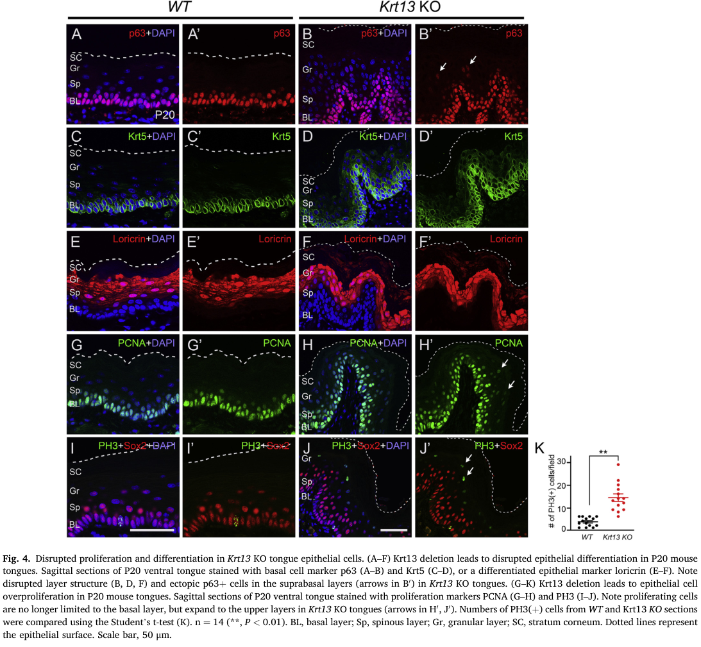

White sponge nevus (WSN; hereditary mucosal leukokeratosis) is a rare, benign, autosomal dominant disorder of the non-cornifying stratified squamous epithelia. It presents, usually in childhood, as bilateral, soft, white, thickened, folded and spongy plaques of the oral mucosa, most often the buccal mucosa, and less often involves the esophageal, nasal and anogenital mucosa. WSN is caused by heterozygous variants in either of the two mucosa-specific keratin genes, KRT4 (WSN1) or KRT13 (WSN2), whose products form the type II/type I keratin intermediate filament pair of differentiating mucosal epithelium. Most variants are missense changes or small in-frame indels in the helix boundary motifs of the keratin rod domain and act in a dominant-negative fashion on filament assembly; histologically the epithelium is acanthotic and parakeratotic, with extensive vacuolization of suprabasal cells and perinuclear aggregates of keratin filaments. Mouse knockouts of either keratin reproduce a WSN-like mucosal phenotype, and the Krt13 knockout shows that the keratin-deficient epithelium fails under postnatal mechanical stress, with suprabasal overproliferation and disordered differentiation. The lesions are usually asymptomatic; treatment is symptomatic, chiefly antibiotic courses or rinses that improve lesions in some patients without altering the underlying disorder. Isolated KRT13 and KRT4 families with cervical or oral dysplasia and oral squamous cell carcinoma have called the traditionally benign course into question.
Ask a research question about White Sponge Nevus. OpenScientist will conduct autonomous deep research using the Disorder Mechanisms Knowledge Base and PubMed literature (typically 10-30 minutes).
Do not include personal health information in your question. Questions and results are cached in your browser's local storage.
name: White Sponge Nevus
creation_date: "2026-10-08T12:00:00Z"
category: Mendelian
description: >-
White sponge nevus (WSN; hereditary mucosal leukokeratosis) is a rare,
benign, autosomal dominant disorder of the non-cornifying stratified squamous
epithelia. It presents, usually in childhood, as bilateral, soft, white,
thickened, folded and spongy plaques of the oral mucosa, most often the
buccal mucosa, and less often involves the esophageal, nasal and anogenital
mucosa. WSN is caused by heterozygous variants in either of the two
mucosa-specific keratin genes, KRT4 (WSN1) or KRT13 (WSN2), whose products
form the type II/type I keratin intermediate filament pair of differentiating
mucosal epithelium. Most variants are missense changes or small in-frame
indels in the helix boundary motifs of the keratin rod domain and act in a
dominant-negative fashion on filament assembly; histologically the epithelium
is acanthotic and parakeratotic, with extensive vacuolization of suprabasal
cells and perinuclear aggregates of keratin filaments. Mouse knockouts of
either keratin reproduce a WSN-like mucosal phenotype, and the Krt13 knockout
shows that the keratin-deficient epithelium fails under postnatal mechanical
stress, with suprabasal overproliferation and disordered differentiation.
The lesions are usually asymptomatic; treatment is symptomatic, chiefly
antibiotic courses or rinses that improve lesions in some patients without
altering the underlying disorder. Isolated KRT13 and KRT4 families with
cervical or oral dysplasia and oral squamous cell carcinoma have called the
traditionally benign course into question.
disease_term:
preferred_term: white sponge nevus
term:
id: MONDO:0015748
label: hereditary mucosal leukokeratosis
synonyms:
- hereditary mucosal leukokeratosis
- white sponge nevus of Cannon
- white sponge naevus
- WSN
parents:
- keratinizing disorder
- genodermatosis
- intermediate filament disease
has_subtypes:
- name: WSN1
display_name: WSN1 (KRT4; white sponge nevus 1)
subtype_term:
preferred_term: white sponge nevus 1
term:
id: MONDO:0008676
label: white sponge nevus 1
description: >-
WSN caused by heterozygous variants in KRT4, the type II mucosal keratin.
The first reported variant was a three-base-pair in-frame deletion in the
helix initiation peptide of K4; later families carry missense variants
elsewhere in the rod domain, including the 2B domain.
genes:
- preferred_term: KRT4
term:
id: hgnc:6441
label: KRT4
evidence:
- reference: PMID:7493030
reference_title: "A mutation in the mucosal keratin K4 is associated with oral white sponge nevus."
supports: SUPPORT
evidence_source: HUMAN_CLINICAL
snippet: "We have now confirmed this hypothesis and report here a three base-pair (bp) deletion in the helix initiation peptide of K4 in affected members from two families with this condition."
explanation: >-
The founding report establishing KRT4 as a WSN gene, in two families.
- reference: PMID:12828738
reference_title: "A novel mutation in the keratin 4 gene causing white sponge naevus."
supports: SUPPORT
evidence_source: HUMAN_CLINICAL
snippet: "Mutation analysis revealed a heterozygous missense mutation 1345G-->A in KRT4, predicting an amino acid change, E449K, in the 2B domain of the K4 polypeptide."
explanation: >-
Extends the KRT4 allelic series to a heterozygous 2B-domain missense
variant.
- name: WSN2
display_name: WSN2 (KRT13; white sponge nevus 2)
subtype_term:
preferred_term: white sponge nevus 2
term:
id: MONDO:0014346
label: white sponge nevus 2
description: >-
WSN caused by heterozygous variants in KRT13, the type I mucosal keratin.
Reported variants cluster in the 1A helix initiation region of the rod
domain (for example L111P, N112S, R114C, Y118D). A four-generation Dutch
family with a KRT13 variant showed vaginal and cervical involvement in all
adult women and oral squamous cell carcinoma in two members.
genes:
- preferred_term: KRT13
term:
id: hgnc:6415
label: KRT13
evidence:
- reference: PMID:7493031
reference_title: "Keratin 13 point mutation underlies the hereditary mucosal epithelial disorder white sponge nevus."
supports: SUPPORT
evidence_source: HUMAN_CLINICAL
snippet: "We identified a missense mutation in one allele of keratin 13 that leads to proline substitution for a conserved leucine."
explanation: >-
The founding report establishing KRT13 as a WSN gene by linkage and
mutation analysis in a multigenerational family.
- reference: PMID:11379896
reference_title: "A novel mutation in the keratin 13 gene causing oral white sponge nevus."
supports: SUPPORT
evidence_source: HUMAN_CLINICAL
snippet: "The K4 locus was excluded by genetic linkage analysis; however, genetic linkage consistent with a K13 defect was obtained."
explanation: >-
Independent confirmation in a large Scottish family in which linkage
excluded KRT4 and implicated KRT13.
- reference: PMID:25606422
reference_title: "Keratin 13 mutations associated with oral white sponge nevus in two Chinese families."
supports: SUPPORT
evidence_source: HUMAN_CLINICAL
snippet: "Sequencing analysis revealed two mutations of KRT13 gene: one mutation was 332T>C and amino acid change was Leu111Pro. Another mutation was 340C>T and amino acid change was Arg114Cys."
explanation: >-
Two further KRT13 1A-region missense variants in two families.
pathophysiology:
- name: Dominant-Negative Mucosal Keratin Variant
conforms_to: "keratin_intermediate_filament_fragility#Dominant-Negative Keratin Variant in a Filament Assembly Domain"
biological_scale: MOLECULAR
description: >-
A heterozygous variant in KRT4 or KRT13, usually a missense change or small
in-frame indel in a helix boundary motif of the rod domain (most often the
1A helix initiation region of K13). These motifs are critical for keratin
filament stability, so the mutant subunit acts on the network assembled by
the wild-type allele. K4 and K13 are the major differentiation-specific
keratin pair of buccal, nasal, esophageal and anogenital epithelia, which
predicts the tissue distribution of the disease.
genes:
- preferred_term: KRT4
term:
id: hgnc:6441
label: KRT4
- preferred_term: KRT13
term:
id: hgnc:6415
label: KRT13
molecular_functions:
- preferred_term: keratin filament structural constituent
term:
id: GO:0005200
label: structural constituent of cytoskeleton
modifier: ABNORMAL
evidence:
- reference: PMID:7493031
reference_title: "Keratin 13 point mutation underlies the hereditary mucosal epithelial disorder white sponge nevus."
supports: SUPPORT
evidence_source: HUMAN_CLINICAL
snippet: "The mutation occurred within the conserved 1A region of the helical rod domain, which is critical for KIF stability and is the site of most pathogenic keratin mutations."
explanation: >-
Places the founding KRT13 variant in the assembly-critical 1A region.
- reference: PMID:29476668
reference_title: "Clinical features and molecular genetic analysis in a Turkish family with oral white sponge nevus."
supports: SUPPORT
evidence_source: HUMAN_CLINICAL
quote_role: BACKGROUND
snippet: "All these mutations are heterozygous dominant-negative mutations affecting conserved sequences in the keratin rod domain that are critically important for the assembly of keratin filaments."
explanation: >-
Summarises the reported KRT4/KRT13 variants as heterozygous
dominant-negative rod-domain changes; this is the paper's background
synthesis rather than its own result.
- reference: PMID:7493030
reference_title: "A mutation in the mucosal keratin K4 is associated with oral white sponge nevus."
supports: SUPPORT
evidence_source: HUMAN_CLINICAL
snippet: "The major differentiation specific keratins of the buccal mucosa, nasal, esophageal and anogenital epithelia are K4 and K13 (ref. 7)."
explanation: >-
Establishes the K4/K13 expression domain that matches the sites of WSN
lesions.
downstream:
- target: Mucosal Keratin Filament Network Disruption and Aggregation
causal_link_type: DIRECT
description: >-
Mutant K4 or K13 is incorporated with the wild-type partner keratin and
defeats normal filament assembly.
evidence:
- reference: PMID:28878914
reference_title: "A novel keratin 13 variant in a four-generation family with white sponge nevus."
supports: SUPPORT
evidence_source: HUMAN_CLINICAL
quote_role: BACKGROUND
snippet: "Single amino acid alterations have shown to produce defective keratin intermediate filaments which form dense cytoplasmic aggregates in upper spinous layers"
explanation: >-
Links single-residue keratin variants to defective filaments that
aggregate in the upper spinous layers; background statement in a
KRT13 family report.
- name: Mucosal Keratin Filament Network Disruption and Aggregation
conforms_to: "keratin_intermediate_filament_fragility#Keratin Filament Network Collapse and Aggregation"
biological_scale: CELLULAR
description: >-
In the suprabasal cells of affected mucosa the K4/K13 filament network is
replaced by compact perinuclear aggregates of keratin intermediate
filaments. In cultured patient oral epithelial cells carrying KRT13
variants, K13 protein is reduced while its mRNA is unchanged, and
proteasome inhibition restores protein levels, suggesting that mutant K13
is also cleared by enhanced ubiquitin-mediated degradation.
cell_types:
- preferred_term: oral mucosa squamous cell
term:
id: CL:1001576
label: oral mucosa squamous cell
biological_processes:
- preferred_term: keratin intermediate filament organization
term:
id: GO:0045109
label: intermediate filament organization
modifier: ABNORMAL
locations:
- preferred_term: oral mucosa
term:
id: UBERON:0003343
label: mucosa of oral region
evidence:
- reference: PMID:7493031
reference_title: "Keratin 13 point mutation underlies the hereditary mucosal epithelial disorder white sponge nevus."
supports: SUPPORT
evidence_source: HUMAN_CLINICAL
snippet: "Histopathological features, including epithelial thickening, parakeratosis, extensive vacuolization of the suprabasal keratinocytes and compact aggregates of keratin intermediate filaments (KIF) in the upper spinous layers, resemble those found in epidermal disorders due to keratin defects."
explanation: >-
Documents keratin filament aggregates in the upper spinous layers of
patient mucosa.
- reference: PMID:25606422
reference_title: "Keratin 13 mutations associated with oral white sponge nevus in two Chinese families."
supports: SUPPORT
evidence_source: IN_VITRO
snippet: "Real-Time RT-PCR and Western blot analysis results show that KRT13 expression level is lower in patient but keep almost no change in mRNA level. When cells were treated with MG132, KRT13 protein level was increased and kept almost the same in normal and patient cells."
explanation: >-
In cultured patient cells, KRT13 protein is reduced post-transcriptionally
and rescued by proteasome inhibition.
downstream:
- target: Loss of Mucosal Epithelial Mechanical Resilience
causal_link_type: DIRECT
description: >-
Without a functional K4/K13 network the mucosal epithelial cell loses
the cytoskeletal scaffold that bears mechanical stress.
evidence:
- reference: PMID:32758484
reference_title: "Keratin 13 deficiency causes white sponge nevus in mice."
supports: SUPPORT
evidence_source: MODEL_ORGANISM
snippet: "It is reasonable to predict that any defects that alter Krt13-mediated intermediate filament assembly, either loss of Krt13 protein or expressing mutant forms of Krt13, will result in the same mechanical instability to the epithelial cells."
explanation: >-
The authors connect defective Krt13 filament assembly, whether by loss
or by mutant protein, to mechanical instability of the epithelium.
- name: Loss of Mucosal Epithelial Mechanical Resilience
conforms_to: "keratin_intermediate_filament_fragility#Loss of Keratinocyte Mechanical Resilience"
biological_scale: CELLULAR
description: >-
Keratin-deficient mucosal epithelium develops normally before birth but
cannot tolerate the mechanical stresses of postnatal life (feeding,
chewing). In Krt13 knockout tongues the phenotype is absent at birth and
appears postnatally, and mechanical stress applied to cultured knockout
tongue directly induces proliferation-associated genes.
cell_types:
- preferred_term: oral mucosa squamous cell
term:
id: CL:1001576
label: oral mucosa squamous cell
evidence:
- reference: PMID:32758484
reference_title: "Keratin 13 deficiency causes white sponge nevus in mice."
supports: SUPPORT
evidence_source: MODEL_ORGANISM
snippet: "We also provide evidence that epithelial cells without Krt13 are susceptible to mechanical stresses experienced during postnatal life, resulting in unbalanced cell proliferation and differentiation."
explanation: >-
Shows that Krt13-null epithelium is vulnerable to postnatal mechanical
stress.
- reference: PMID:32758484
reference_title: "Keratin 13 deficiency causes white sponge nevus in mice."
supports: SUPPORT
evidence_source: MODEL_ORGANISM
snippet: "Interestingly, desmosomes were often found broken and the intermediate filaments running from the desmosomes to the cytoplasm were missing or reduced in Krt13 KO tissues."
explanation: >-
Electron microscopy shows loss of the desmosome-anchored keratin
filaments that bear mechanical load, with broken desmosomes.
downstream:
- target: Suprabasal Epithelial Overproliferation and Disordered Differentiation
causal_link_type: DIRECT
description: >-
Mechanical stress on keratin-deficient epithelium drives proliferation
outside the basal layer and disturbs maturation.
evidence:
- reference: PMID:32758484
reference_title: "Keratin 13 deficiency causes white sponge nevus in mice."
supports: SUPPORT
evidence_source: MODEL_ORGANISM
snippet: "This finding indicates that Krt13 is directly coupled with cell cycle control and loss of Krt13 makes epithelial cells susceptible to stress-induced overproliferation."
explanation: >-
The cultured-tongue experiment ties mechanical stress to
overproliferation in Krt13-null epithelium.
- name: Suprabasal Epithelial Overproliferation and Disordered Differentiation
biological_scale: CELLULAR
description: >-
Proliferating cells, normally confined to the basal layer, extend into the
suprabasal layers, and suprabasal cells remain immature, with nuclear
atypia and cytoplasmic vacuolization. Both K4-null and K13-null mice show
this combination of basal hyperplasia and failed maturation.
cell_types:
- preferred_term: oral mucosa squamous cell
term:
id: CL:1001576
label: oral mucosa squamous cell
biological_processes:
- preferred_term: epithelial cell proliferation
term:
id: GO:0050673
label: epithelial cell proliferation
modifier: INCREASED
- preferred_term: squamous epithelial differentiation
term:
id: GO:0030216
label: keratinocyte differentiation
modifier: ABNORMAL
evidence:
- reference: PMID:32758484
reference_title: "Keratin 13 deficiency causes white sponge nevus in mice."
supports: SUPPORT
evidence_source: MODEL_ORGANISM
snippet: "In Krt13 KO epithelium, we observed proliferating cells expanded to the upper layers of the epithelium (Fig."
explanation: >-
PCNA staining shows proliferation extending into suprabasal layers in
Krt13-null epithelium.
- reference: PMID:9727004
reference_title: "Mouse keratin 4 is necessary for internal epithelial integrity."
supports: SUPPORT
evidence_source: MODEL_ORGANISM
snippet: "The cellular phenotypes include basal hyperplasia, lack of maturation, hyperkeratosis, atypical nuclei, perinuclear clearing, and cell degeneration."
explanation: >-
K4-null mice show the same hyperplasia-with-failed-maturation pattern,
so the mechanism holds for both WSN genes.
downstream:
- target: Thickened Vacuolated Mucosal Epithelium
causal_link_type: DIRECT
description: >-
Overproliferation with retained immature, vacuolated suprabasal cells
thickens the epithelium into the characteristic spongy plaque.
evidence:
- reference: PMID:32758484
reference_title: "Keratin 13 deficiency causes white sponge nevus in mice."
supports: SUPPORT
evidence_source: MODEL_ORGANISM
snippet: "Severe abnormalities including thickened epithelium, immature suprabasal cells, loss of keratohyalin granules, and disorganized keratin layer were found in the buccal mucosa and esophagus of P20 Krt13 KO mice."
explanation: >-
The same knockout epithelium that overproliferates becomes thickened
with immature suprabasal cells.
- target: Oral Epithelial Dysplasia
causal_link_type: INDIRECT_UNKNOWN_INTERMEDIATES
description: >-
Proposed, not established. The single reported KRT4 case that progressed
to dysplasia was attributed by its authors to altered epithelial
proliferation and differentiation; the patient's heavy smoking is an
alternative explanation.
evidence:
- reference: PMID:38773401
reference_title: "Malignant transformation of white sponge nevus: a case report of a novel keratin 4 mutation."
supports: SUPPORT
evidence_source: HUMAN_CLINICAL
snippet: "The novel pathogenic mutation in KRT4 is postulated to alter epithelial proliferation and differentiation, thereby raising concerns about the malignant transformation of WSN."
explanation: >-
The case report proposes that altered proliferation and differentiation
of WSN epithelium underlies the dysplasia it observed.
- target: Oral Squamous Cell Carcinoma
causal_link_type: INDIRECT_UNKNOWN_INTERMEDIATES
description: >-
Proposed, not established. Altered epithelial proliferation and
differentiation has been postulated to underlie the rare dysplasia and
carcinoma reported in WSN families; the link rests on case reports.
evidence:
- reference: PMID:38773401
reference_title: "Malignant transformation of white sponge nevus: a case report of a novel keratin 4 mutation."
supports: SUPPORT
evidence_source: HUMAN_CLINICAL
snippet: "The novel pathogenic mutation in KRT4 is postulated to alter epithelial proliferation and differentiation, thereby raising concerns about the malignant transformation of WSN."
explanation: >-
A single-case report proposes that the altered proliferation and
differentiation of WSN epithelium underlies malignant transformation.
- name: Thickened Vacuolated Mucosal Epithelium
biological_scale: TISSUE
description: >-
The tissue-level lesion of WSN: an acanthotic, parakeratotic, non-cornifying
squamous epithelium with marked vacuolization (clearing) of spinous-layer
cells and perinuclear eosinophilic keratin condensations. Clinically it is
the soft, white, folded, spongy plaque.
locations:
- preferred_term: oral mucosa
term:
id: UBERON:0003343
label: mucosa of oral region
evidence:
- reference: PMID:28878914
reference_title: "A novel keratin 13 variant in a four-generation family with white sponge nevus."
supports: SUPPORT
evidence_source: HUMAN_CLINICAL
quote_role: BACKGROUND
snippet: "The histological features of WSN are acanthosis, parakeratosis, cytoplasmic clearing of spinous layer keratinocytes, and characteristic perinuclear eosinophilic condensations that correspond to abnormal aggregation of cytokeratin tonofilaments"
explanation: >-
Summarises the histopathological hallmarks of WSN mucosa.
- reference: PMID:36829648
reference_title: "Exfoliative Cytology and Genetic Analysis for a Non-Invasive Approach to the Diagnosis of White Sponge Nevus: Case Series."
supports: SUPPORT
evidence_source: HUMAN_CLINICAL
snippet: "Pathology and cytology showed similar results, leading to the same diagnosis of hyperkeratotic epithelium with acanthosis and spongiosis, without atypia, demonstrating the efficiency of LBC for the differential diagnosis."
explanation: >-
Biopsy and cytology in a four-patient series show acanthotic,
hyperkeratotic epithelium without atypia.
downstream:
- target: White Spongy Oral Mucosal Plaques
causal_link_type: DIRECT
- target: Esophageal Mucosal Plaques
causal_link_type: DIRECT
- target: Vaginal and Cervical Mucosal Plaques
causal_link_type: DIRECT
- target: Parakeratosis
causal_link_type: DIRECT
- target: Secondary Oral Mucosal Infection
causal_link_type: INDIRECT_KNOWN_INTERMEDIATES
intermediate_mechanisms:
- Deep mucosal folds that harbour bacterial and fungal growth.
description: >-
The folds of the thickened plaque are thought to favour microbial
overgrowth.
evidence:
- reference: PMID:32758484
reference_title: "Keratin 13 deficiency causes white sponge nevus in mice."
supports: SUPPORT
evidence_source: HUMAN_CLINICAL
quote_role: BACKGROUND
snippet: "WSN is a benign overgrowth of the epithelial cells and generally asymptomatic, but the folds in the tissue can promote bacterial/fungal growth and lead to infection and pain"
explanation: >-
States that the folded WSN tissue can promote bacterial or fungal
growth and infection; a background statement in a mouse study about
the human disease.
phenotypes:
- name: White Spongy Oral Mucosal Plaques
category: Oral
frequency: VERY_FREQUENT
description: >-
Bilateral, symmetric, soft, white or grey, thickened, folded and spongy
plaques of the oral mucosa, most often the buccal mucosa, and also the
ventral tongue, labial mucosa, alveolar ridge and floor of the mouth. Onset
is usually in childhood; the lesions are usually painless.
phenotype_term:
preferred_term: White spongy plaques of the oral mucosa
term:
id: HP:0025125
label: White lesion of the oral mucosa
evidence:
- reference: PMID:7493031
reference_title: "Keratin 13 point mutation underlies the hereditary mucosal epithelial disorder white sponge nevus."
supports: SUPPORT
evidence_source: HUMAN_CLINICAL
snippet: "White sponge nevus (WSN) is a rare autosomal dominant disorder of non-cornifying squamous epithelial differentiation that presents clinically as bilateral white, soft, thick plaques of the oral mucosa."
explanation: >-
Defines the cardinal oral lesion.
- reference: PMID:36829648
reference_title: "Exfoliative Cytology and Genetic Analysis for a Non-Invasive Approach to the Diagnosis of White Sponge Nevus: Case Series."
supports: SUPPORT
evidence_source: HUMAN_CLINICAL
snippet: "Lesions are thick and spongy, typically appear before puberty"
explanation: >-
Describes the thick, spongy texture and pre-pubertal onset of the
lesions.
- name: Esophageal Mucosal Plaques
category: Gastrointestinal
description: >-
White plaques of the esophageal mucosa, reported less often than oral
lesions and in both KRT4 and KRT13 families; Krt13 knockout mice show the
same change in the esophagus.
phenotype_term:
preferred_term: Esophageal white plaques
term:
id: HP:0012859
label: Esophageal leukoplakia
evidence:
- reference: PMID:7493030
reference_title: "A mutation in the mucosal keratin K4 is associated with oral white sponge nevus."
supports: SUPPORT
evidence_source: HUMAN_CLINICAL
snippet: "Phenotypically it presents as white 'spongy' plaques (oral leukokeratoses), most commonly in the mouth but also reported in the esophagus and anogenital mucosa."
explanation: >-
Records esophageal involvement as a less common site.
- reference: PMID:32758484
reference_title: "Keratin 13 deficiency causes white sponge nevus in mice."
supports: SUPPORT
evidence_source: MODEL_ORGANISM
snippet: "Krt13 knockout mice show a WSN-like phenotype in several tissues, including the tongue, buccal mucosa, and esophagus."
explanation: >-
The Krt13 knockout reproduces esophageal involvement.
- name: Vaginal and Cervical Mucosal Plaques
category: Genitourinary
description: >-
White spongy plaques of the vaginal and cervical mucosa. Uncommon overall;
in one four-generation KRT13 family all four adult women had genital,
vaginal and cervical lesions. Rectal and other genital sites are also
reported but have no specific HPO term and are not modelled separately;
the binding covers the vaginal involvement only.
phenotype_term:
preferred_term: White spongy plaques of the vaginal mucosa
term:
id: HP:0000142
label: Abnormal vagina morphology
evidence:
- reference: PMID:28878914
reference_title: "A novel keratin 13 variant in a four-generation family with white sponge nevus."
supports: SUPPORT
evidence_source: HUMAN_CLINICAL
snippet: "Genital, vaginal, and cervical WSN were observed in four female patients, of whom two had premalignant cervical lesions at young age."
explanation: >-
Documents vaginal and cervical WSN in a KRT13 family.
- reference: PMID:7493031
reference_title: "Keratin 13 point mutation underlies the hereditary mucosal epithelial disorder white sponge nevus."
supports: SUPPORT
evidence_source: HUMAN_CLINICAL
snippet: "Less frequently the mucous membranes of the nose, esophagus, genitalia and rectum are involved."
explanation: >-
Records genital and rectal mucosa as less frequent sites.
- name: Parakeratosis
category: Histopathology
description: >-
Retention of nuclei in the surface layer of the thickened mucosal
epithelium, together with acanthosis and suprabasal vacuolization.
phenotype_term:
preferred_term: Parakeratosis of the oral mucosa
term:
id: HP:0001036
label: Parakeratosis
evidence:
- reference: PMID:12828738
reference_title: "A novel mutation in the keratin 4 gene causing white sponge naevus."
supports: SUPPORT
evidence_source: HUMAN_CLINICAL
snippet: "Pathologically, the affected mucosa showed epithelial thickening, parakeratosis and extensive vacuolization of the suprabasal keratinocytes."
explanation: >-
Biopsy of a KRT4 patient shows parakeratosis of the affected mucosa.
- name: Secondary Oral Mucosal Infection
category: Infectious
description: >-
Bacterial or fungal overgrowth in the folds of the plaques, which can make
otherwise painless lesions symptomatic and is the target of antibiotic
treatment.
phenotype_term:
preferred_term: Secondary infection of oral mucosal plaques
term:
id: HP:5210280
label: Unusual oral cavity infection
evidence:
- reference: PMID:32758484
reference_title: "Keratin 13 deficiency causes white sponge nevus in mice."
supports: SUPPORT
evidence_source: HUMAN_CLINICAL
quote_role: BACKGROUND
snippet: "WSN is a benign overgrowth of the epithelial cells and generally asymptomatic, but the folds in the tissue can promote bacterial/fungal growth and lead to infection and pain"
explanation: >-
States that secondary bacterial or fungal infection of the folded
plaques occurs and causes pain.
- name: Cervical Dysplasia
category: Neoplasm
subtype: WSN2
description: >-
Premalignant cervical lesions at a young age, reported in two of four
affected women in one KRT13 family.
phenotype_term:
preferred_term: Cervical dysplasia
term:
id: HP:0032131
label: Cervical dysplasia
evidence:
- reference: PMID:28878914
reference_title: "A novel keratin 13 variant in a four-generation family with white sponge nevus."
supports: SUPPORT
evidence_source: HUMAN_CLINICAL
snippet: "Genital, vaginal, and cervical WSN were observed in four female patients, of whom two had premalignant cervical lesions at young age."
explanation: >-
Reports premalignant cervical lesions in two affected women.
- name: Oral Squamous Cell Carcinoma
category: Neoplasm
description: >-
Rare. Two of twelve members with oral WSN in a KRT13 family developed oral
squamous cell carcinoma. Whether WSN carries a real malignant potential is
unsettled. HPO has no oral-cavity squamous cell carcinoma term, so the
head and neck term is bound (see notes).
phenotype_term:
preferred_term: Oral squamous cell carcinoma
term:
id: HP:0020357
label: Head and neck squamous cell carcinoma
evidence:
- reference: PMID:28878914
reference_title: "A novel keratin 13 variant in a four-generation family with white sponge nevus."
supports: SUPPORT
evidence_source: HUMAN_CLINICAL
snippet: "Two of the 12 patients with oral WSN developed oral squamous cell carcinoma."
explanation: >-
Oral squamous cell carcinoma in two members of a KRT13 family.
- name: Oral Epithelial Dysplasia
category: Neoplasm
subtype: WSN1
description: >-
Moderate-to-severe epithelial dysplasia arising within a WSN lesion over
one year, reported in a single 70-year-old man with a novel KRT4 variant.
He had smoked at least 20 cigarettes a day for 40 years, which confounds
attributing the dysplasia to WSN. The lesion was excised.
notes: >-
Left unbound. OLS searches of HP for "oral epithelial dysplasia" and
"oral leukoplakia dysplasia", and runoak ols:hp "l~epithelial dysplasia"
and "l~oral dysplasia", returned no term. HP:0100649 Neoplasm of the oral
cavity was not used because dysplasia is not a neoplasm.
evidence:
- reference: PMID:38773401
reference_title: "Malignant transformation of white sponge nevus: a case report of a novel keratin 4 mutation."
supports: SUPPORT
evidence_source: HUMAN_CLINICAL
snippet: "Over a one-year follow-up, the lesion underwent malignant transformation, evolving into local epithelial moderate-to-severe dysplasia."
explanation: >-
A KRT4 case in which a WSN lesion progressed to moderate-to-severe
dysplasia.
- reference: PMID:38773401
reference_title: "Malignant transformation of white sponge nevus: a case report of a novel keratin 4 mutation."
supports: REFUTE
evidence_source: HUMAN_CLINICAL
snippet: "The patient had a 40-year history of smoking (≥ 20 cigarettes per day) but had ceased smoking for the past three years."
explanation: >-
The same patient's heavy smoking is an independent cause of oral
dysplasia, so this weakens attributing his dysplasia to WSN.
diagnosis:
- name: Clinical Oral Examination
description: >-
Diagnosis usually starts from the clinical picture: bilateral, soft,
white, folded plaques present from childhood, often with a family history.
Unlike candidiasis the plaques cannot be wiped off, and unlike oral lichen
planus they lack Wickham striae.
diagnosis_term:
preferred_term: oral examination
term:
id: NCIT:C163004
label: Oral Examination
evidence:
- reference: PMID:36829648
reference_title: "Exfoliative Cytology and Genetic Analysis for a Non-Invasive Approach to the Diagnosis of White Sponge Nevus: Case Series."
supports: SUPPORT
evidence_source: HUMAN_CLINICAL
snippet: "Unlike oral lichen planus and other lichenoid lesions, WSN does not present the typical Wickham striae and cannot be removed with a gauze or a spatula as candidiasis."
explanation: >-
Gives the bedside features that separate WSN plaques from lichen planus and candidiasis.
- name: Incisional Biopsy and Histopathology
description: >-
Incisional biopsy remains the reference standard. It shows acanthosis,
parakeratosis or hyperkeratosis, marked vacuolization of spinous-layer
cells and perinuclear keratin condensation, without atypia. Biopsy is
needed in adults and for any new, focal or changing lesion, where
potentially malignant disorders are more common.
diagnosis_term:
preferred_term: incisional biopsy with histopathology
term:
id: NCIT:C15386
label: Incisional Biopsy
evidence:
- reference: PMID:36829648
reference_title: "Exfoliative Cytology and Genetic Analysis for a Non-Invasive Approach to the Diagnosis of White Sponge Nevus: Case Series."
supports: SUPPORT
evidence_source: HUMAN_CLINICAL
snippet: "Both histological analysis on oral biopsy and Cell Block preparation on exfoliative cytology led to the same benign diagnosis of WSN, namely hyperkeratotic epithelium with acanthosis and spongiosis."
explanation: >-
Biopsy histology in the four-patient series showed the characteristic benign WSN pattern.
- reference: PMID:36829648
reference_title: "Exfoliative Cytology and Genetic Analysis for a Non-Invasive Approach to the Diagnosis of White Sponge Nevus: Case Series."
supports: SUPPORT
evidence_source: HUMAN_CLINICAL
snippet: "In adult patients with bilateral white lesion, a different diagnostic algorithm must be followed because malignant disorders are more common and a biopsy is mandatory in the majority of cases."
explanation: >-
Biopsy is required in adults, where malignant white lesions are more common.
- name: Exfoliative Liquid-Based Cytology
description: >-
Oral brush sampling into liquid-based (ThinPrep) medium, with cell-block
preparation, gave the same diagnosis as biopsy in a four-patient series.
It is proposed as a non-invasive alternative for children and for
follow-up, with biopsy kept for lesions that change. The evidence is one
small series, not a validated sensitivity.
diagnosis_term:
preferred_term: exfoliative liquid-based cytology
term:
id: NCIT:C99177
label: Liquid-Based Cytology
evidence:
- reference: PMID:36829648
reference_title: "Exfoliative Cytology and Genetic Analysis for a Non-Invasive Approach to the Diagnosis of White Sponge Nevus: Case Series."
supports: SUPPORT
evidence_source: HUMAN_CLINICAL
snippet: "Pathology and cytology showed similar results, leading to the same diagnosis of hyperkeratotic epithelium with acanthosis and spongiosis, without atypia, demonstrating the efficiency of LBC for the differential diagnosis."
explanation: >-
Cytology and biopsy agreed in all four patients.
- reference: PMID:36829648
reference_title: "Exfoliative Cytology and Genetic Analysis for a Non-Invasive Approach to the Diagnosis of White Sponge Nevus: Case Series."
supports: SUPPORT
evidence_source: HUMAN_CLINICAL
snippet: "The combination of cytological and genetic analyses could substitute the histologic exam, providing a non-invasive alternative for incisional biopsy."
explanation: >-
The authors propose cytology plus genetic testing as a non-invasive alternative to biopsy.
- name: KRT4 and KRT13 Sequencing
description: >-
Sequencing of the coding regions and splice sites of both KRT4 and KRT13,
with segregation testing in relatives, confirms a molecular diagnosis and
assigns the subtype. Interpret with care: rare KRT4/KRT13 variants are
common and are often inherited from unaffected parents, so a rare variant
is not proof of causation without segregation or functional evidence.
RNA analysis can confirm a suspected splice variant.
diagnosis_term:
preferred_term: KRT4 and KRT13 gene sequencing
term:
id: NCIT:C15709
label: Genetic Testing
evidence:
- reference: PMID:36829648
reference_title: "Exfoliative Cytology and Genetic Analysis for a Non-Invasive Approach to the Diagnosis of White Sponge Nevus: Case Series."
supports: SUPPORT
evidence_source: HUMAN_CLINICAL
snippet: "Sequencing analysis revealed at least 6 rare variants in the KRT4 and KRT13 genes in each patient, contributed in part by both unaffected parents."
explanation: >-
Shows that rare KRT4/KRT13 variants are frequently inherited from unaffected parents, the main interpretive caveat for sequencing.
- reference: PMID:28878914
reference_title: "A novel keratin 13 variant in a four-generation family with white sponge nevus."
supports: SUPPORT
evidence_source: HUMAN_CLINICAL
snippet: "Analysis of KRT4 and KRT13 sequences was performed by PCR amplification of the coding regions and splice sites, including some intronic sequences, with flanking‐specific primers (primers and conditions available upon request) followed by standard Sanger sequencing."
explanation: >-
Describes sequencing both genes across coding regions and splice sites,
the approach that found an intronic splice allele.
- name: HPV In Situ Hybridization and Keratin Immunohistochemistry
description: >-
HPV-13-driven Heck disease (focal epithelial hyperplasia) can look like
WSN clinically and histologically. In situ hybridization for HPV 13 (and
HPV 6/11 for condyloma) together with K4/K13 immunohistochemistry
separates them: lesions called WSN that were HPV negative showed marked
loss of K4 or K13 staining.
diagnosis_term:
preferred_term: HPV in situ hybridization
term:
id: NCIT:C17562
label: In Situ Hybridization
evidence:
- reference: PMID:31473371
reference_title: "The molecular-based differentiation of Heck's disease from its mimics including oral condyloma and white sponge nevus."
supports: SUPPORT
evidence_source: HUMAN_CLINICAL
snippet: "High copy HPV 13 DNA was evident in the squamous cells towards the surface in the two cases diagnosed as Heck's disease and in two cases diagnosed as white sponge nevus on clinical grounds."
explanation: >-
Two clinically diagnosed WSN lesions were in fact HPV-13 positive.
- reference: PMID:31473371
reference_title: "The molecular-based differentiation of Heck's disease from its mimics including oral condyloma and white sponge nevus."
supports: SUPPORT
evidence_source: HUMAN_CLINICAL
snippet: "Marked decrease in either cytokeratin 4 or 13 was evident in the two cases diagnosed as white sponge nevus that were HPV DNA negative."
explanation: >-
HPV-negative WSN lesions showed loss of K4 or K13 staining.
- name: Differential Diagnosis
description: >-
Conditions to exclude: HPV-13 Heck disease; other genodermatoses with oral
white lesions, notably hereditary benign intraepithelial dyskeratosis and
Darier disease (and pachyonychia congenita); oral pseudomembranous
candidiasis, thermal injury and frictional trauma; and, especially in
adults, potentially malignant disorders such as leukoplakia (including
proliferative verrucous leukoplakia) and plaque-type oral lichen planus.
evidence:
- reference: PMID:36829648
reference_title: "Exfoliative Cytology and Genetic Analysis for a Non-Invasive Approach to the Diagnosis of White Sponge Nevus: Case Series."
supports: SUPPORT
evidence_source: HUMAN_CLINICAL
snippet: "The differential diagnosis is necessary when an hereditary epithelial disorder is supposed, in fact many other genodermatoses (Table 1), such as Hereditary Benign Intraepithelial Dyskeratosis (OMIM %127600) and Follicular Keratosis (Darier-White disease, OMIM #124200), can affect the oral cavity and should be excluded [1,2,14]."
explanation: >-
Names the hereditary mimics of WSN.
- reference: PMID:36829648
reference_title: "Exfoliative Cytology and Genetic Analysis for a Non-Invasive Approach to the Diagnosis of White Sponge Nevus: Case Series."
supports: SUPPORT
evidence_source: HUMAN_CLINICAL
snippet: "Since WSN is generally diagnosed in adolescence, from a clinical point of view it should be differentiated mainly from thermal injuries, oral pseudomembranous candidiasis, trauma (factitia) and more rarely from oral lichen planus and other lichenoid lesion."
explanation: >-
Names the acquired mimics, including candidiasis.
- reference: PMID:36829648
reference_title: "Exfoliative Cytology and Genetic Analysis for a Non-Invasive Approach to the Diagnosis of White Sponge Nevus: Case Series."
supports: SUPPORT
evidence_source: HUMAN_CLINICAL
snippet: "conditions such as leukoplakia (especially its proliferative verrucous form) and oral lichen planus (in its plaque clinical form) must be excluded"
explanation: >-
Names the potentially malignant white lesions to exclude in older
patients.
- reference: PMID:31473371
reference_title: "The molecular-based differentiation of Heck's disease from its mimics including oral condyloma and white sponge nevus."
supports: SUPPORT
evidence_source: HUMAN_CLINICAL
snippet: "It is concluded that in situ hybridization analyses including HPVs 6, 11, and 13 as well as immunohistochemistry for cytokeratins 4 and 13 can differentiate Heck's disease from condyloma and white sponge nevus, which can be difficult to differentiate on clinical and histologic grounds."
explanation: >-
Heck disease is a mimic that needs molecular testing to exclude.
inheritance:
- name: Autosomal dominant inheritance
inheritance_term:
preferred_term: Autosomal dominant inheritance
term:
id: HP:0000006
label: Autosomal dominant inheritance
description: >-
Autosomal dominant with variable expressivity. Penetrance was complete in
the large molecularly characterised families, but irregular penetrance has
been described, and de novo variants occur.
evidence:
- reference: PMID:7493031
reference_title: "Keratin 13 point mutation underlies the hereditary mucosal epithelial disorder white sponge nevus."
supports: SUPPORT
evidence_source: HUMAN_CLINICAL
snippet: "White sponge nevus (WSN) is a rare autosomal dominant disorder of non-cornifying squamous epithelial differentiation that presents clinically as bilateral white, soft, thick plaques of the oral mucosa."
explanation: >-
States autosomal dominant inheritance.
- reference: PMID:29476668
reference_title: "Clinical features and molecular genetic analysis in a Turkish family with oral white sponge nevus."
supports: SUPPORT
evidence_source: HUMAN_CLINICAL
quote_role: BACKGROUND
snippet: "The autosomal dominant trait of WSN shows irregular penetrance and variable expressivity, thus familial cases are rare (3)."
explanation: >-
Records irregular penetrance and variable expressivity of the dominant
trait.
- reference: PMID:28878914
reference_title: "A novel keratin 13 variant in a four-generation family with white sponge nevus."
supports: SUPPORT
evidence_source: HUMAN_CLINICAL
snippet: "We describe a novel KRT13 variant, with a de novo origin in the great‐grandfather, in a four‐generation family that causes WSN with full penetrance."
explanation: >-
Full penetrance and a de novo founder in one large KRT13 family.
prevalence:
- population: Not stated
measure_type: BIRTH_PREVALENCE
rate_high: 0.5
notes: >-
Source phrasing: "occurring in less than 1 in 200,000 births". Upper bound
only (0.5 per 100,000 births).
evidence:
- reference: PMID:36829648
reference_title: "Exfoliative Cytology and Genetic Analysis for a Non-Invasive Approach to the Diagnosis of White Sponge Nevus: Case Series."
supports: SUPPORT
evidence_source: HUMAN_CLINICAL
quote_role: BACKGROUND
snippet: "White Sponge Nevus (WSN) is a rare mucosal leukokeratosis, occurring in less than 1 in 200,000 births"
explanation: >-
Gives the commonly quoted upper bound on birth prevalence.
genetic:
- name: KRT4
gene_term:
preferred_term: KRT4
term:
id: hgnc:6441
label: KRT4
association: Causative
relationship_type: CAUSATIVE
subtype: WSN1
variant_origin: GERMLINE
notes: >-
Heterozygous in-frame deletions and missense variants in the K4 rod domain.
No ClinGen gene-disease validity record for KRT4 and WSN was found in the
local reference cache.
evidence:
- reference: PMID:7493030
reference_title: "A mutation in the mucosal keratin K4 is associated with oral white sponge nevus."
supports: SUPPORT
evidence_source: HUMAN_CLINICAL
snippet: "We have now confirmed this hypothesis and report here a three base-pair (bp) deletion in the helix initiation peptide of K4 in affected members from two families with this condition."
explanation: >-
Founding KRT4 report.
- reference: PMID:36553451
reference_title: "White Sponge Nevus Caused by Keratin 4 Gene Mutation: A Case Report."
supports: SUPPORT
evidence_source: HUMAN_CLINICAL
snippet: "The gene sequencing results showed that there was a heterozygous deletion (C. 438_440delCAA) in exon 1 of the K4 gene, resulting in an aspartic acid loss in both the proband and his father."
explanation: >-
A heterozygous in-frame KRT4 deletion in an affected father and son,
found by exome sequencing.
- name: KRT13
gene_term:
preferred_term: KRT13
term:
id: hgnc:6415
label: KRT13
association: Causative
relationship_type: CAUSATIVE
subtype: WSN2
variant_origin: GERMLINE
notes: >-
Mostly heterozygous missense variants clustering in the 1A helix initiation
region of K13; one family carries a 32-bp intron 5 deletion that causes
aberrant splicing of exon 6 and an in-frame loss of 18 amino acids, so
disease alleles are not limited to coding missense changes. No ClinGen gene-disease validity record for KRT13 and WSN
was found in the local reference cache.
evidence:
- reference: PMID:7493031
reference_title: "Keratin 13 point mutation underlies the hereditary mucosal epithelial disorder white sponge nevus."
supports: SUPPORT
evidence_source: HUMAN_CLINICAL
snippet: "We identified a missense mutation in one allele of keratin 13 that leads to proline substitution for a conserved leucine."
explanation: >-
Founding KRT13 report.
- reference: PMID:11379896
reference_title: "A novel mutation in the keratin 13 gene causing oral white sponge nevus."
supports: SUPPORT
evidence_source: HUMAN_CLINICAL
snippet: "Subsequently, a heterozygous missense mutation 335A>G was detected in exon 1 of the KRT13 gene, predicting the amino acid change N112S in the 1A domain of the K13 polypeptide."
explanation: >-
A heterozygous 1A-domain KRT13 missense variant in a large family.
- reference: PMID:28878914
reference_title: "A novel keratin 13 variant in a four-generation family with white sponge nevus."
supports: SUPPORT
evidence_source: HUMAN_CLINICAL
snippet: "In vitro RNA analysis by use of RT‐PCR initially showed two very weak cDNA bands, indicating aberrant splicing of exon 6."
explanation: >-
RNA analysis shows that the family's KRT13 intronic deletion disrupts
splicing, a non-missense disease allele.
animal_models:
- name: Krt13 knockout mouse
species: Mouse
genotype: Krt13-/-
publication: PMID:32758484
modeled_mechanisms:
- target: Loss of Mucosal Epithelial Mechanical Resilience
relationship: RECAPITULATES
fidelity: MODERATE
model_scale: TISSUE
description: >-
Krt13-null mice develop a WSN-like phenotype in tongue, buccal mucosa and
esophagus that appears postnatally and depends on mechanical stress.
limitations: >-
A null allele, whereas human WSN is caused by heterozygous
dominant-negative variants; the model therefore tests loss of K13
rather than a poisoned K4/K13 network.
evidence:
- reference: PMID:32758484
reference_title: "Keratin 13 deficiency causes white sponge nevus in mice."
supports: SUPPORT
evidence_source: MODEL_ORGANISM
snippet: "We find that Krt13 KO mice recapitulate the phenotypes of WSN patients in multiple tissues, including the tongue, buccal mucosa, and esophagus."
explanation: >-
The authors report that the knockout recapitulates the patient
phenotype.
- name: Krt4 knockout mouse
species: Mouse
genotype: Krt4-/-
publication: PMID:9727004
modeled_mechanisms:
- target: Suprabasal Epithelial Overproliferation and Disordered Differentiation
relationship: RECAPITULATES
fidelity: MODERATE
model_scale: TISSUE
description: >-
Homozygous K4-null mice show basal hyperplasia and failed maturation of
esophageal, tongue and corneal epithelium.
limitations: >-
Homozygous null rather than heterozygous dominant-negative, and the
corneal involvement has no counterpart in human WSN.
evidence:
- reference: PMID:9727004
reference_title: "Mouse keratin 4 is necessary for internal epithelial integrity."
supports: SUPPORT
evidence_source: MODEL_ORGANISM
snippet: "Homozygous mice that do not express K4 develop a spectrum of phenotypes that affect several organs which express K4 including the esophagus, tongue, and cornea."
explanation: >-
K4-null mice develop epithelial lesions in K4-expressing organs.
treatments:
- name: Antibiotic Therapy
description: >-
Systemic antibiotics, or tetracycline, penicillin or chlorhexidine rinses,
improve the lesions in some patients. Responses are inconsistent, lesions
recur when treatment stops, and treatment does not alter the underlying
disorder; long-term low-dose therapy has maintained remission in
responders.
therapeutic_modality: SMALL_MOLECULE
treatment_term:
preferred_term: Pharmacotherapy
term:
id: NCIT:C15986
label: Pharmacotherapy
therapeutic_agent:
- preferred_term: tetracycline
term:
id: CHEBI:27902
label: tetracycline
target_mechanisms:
- target: Secondary Oral Mucosal Infection
description: >-
Antibiotics are thought to act on secondary microbial overgrowth in the
plaques rather than on the keratin defect.
evidence:
- reference: PMID:9692306
reference_title: "Oral white sponge naevus: response to antibiotic therapy."
supports: SUPPORT
evidence_source: HUMAN_CLINICAL
snippet: "Four responded as judged by clinical examination, although not the 6-year-old female or the 18-month-old male; the discontinuation of therapy then resulted in clinical recurrence in those who had responded, but long-term low dose treatment maintained the remission."
explanation: >-
Four of six patients responded to systemic antibiotics, with relapse on
stopping and remission on low-dose maintenance.
- reference: PMID:28878914
reference_title: "A novel keratin 13 variant in a four-generation family with white sponge nevus."
supports: SUPPORT
evidence_source: HUMAN_CLINICAL
quote_role: BACKGROUND
snippet: "WSN are reported to respond on treatment with tetracycline, penicillin, or chlorhexidine"
explanation: >-
Names the agents reported to help.
- reference: PMID:32758484
reference_title: "Keratin 13 deficiency causes white sponge nevus in mice."
supports: SUPPORT
evidence_source: HUMAN_CLINICAL
quote_role: BACKGROUND
snippet: "Available treatments, such as antibiotics or antifungal mouth rinse, are limited to treat the infection but do not affect the course of the disease"
explanation: >-
Antibiotic and antifungal rinses treat secondary infection without
changing the disease course.
- name: Topical Retinoid
description: >-
Topical retinoic acid improves the plaques within days to weeks, but the
lesions recur within months, so the benefit is temporary.
therapeutic_modality: SMALL_MOLECULE
treatment_term:
preferred_term: Pharmacotherapy
term:
id: NCIT:C15986
label: Pharmacotherapy
therapeutic_agent:
- preferred_term: retinoic acid
term:
id: CHEBI:26536
label: retinoic acid
evidence:
- reference: PMID:36553451
reference_title: "White Sponge Nevus Caused by Keratin 4 Gene Mutation: A Case Report."
supports: SUPPORT
evidence_source: HUMAN_CLINICAL
snippet: "The positive initial effect and subsequent recurrence in the later stage were consistent with the majority of WSN treatment experiences."
explanation: >-
In a KRT4-confirmed father, topical retinoic acid helped initially and
the lesions recurred.
- reference: PMID:36553451
reference_title: "White Sponge Nevus Caused by Keratin 4 Gene Mutation: A Case Report."
supports: SUPPORT
evidence_source: HUMAN_CLINICAL
snippet: "Three months later, the bilateral buccal mucosa redeveloped grayish white corrugated folds and plaques (Figure 8)."
explanation: >-
Documents recurrence three months after retinoic acid treatment.
- name: Reassurance and Observation
description: >-
Because the lesions are benign and usually asymptomatic, the main
management of established WSN is accurate diagnosis, reassurance and
follow-up, which avoids unnecessary treatment for mimics such as
candidiasis or leukoplakia. A new, focal, enlarging or symptomatic lesion
should be biopsied rather than assumed to be WSN.
therapeutic_modality: BEHAVIORAL
evidence:
- reference: PMID:27601826
reference_title: "White sponge nevus: Report of three cases in a single family."
supports: SUPPORT
evidence_source: HUMAN_CLINICAL
snippet: "Because it is asymptomatic and benign, WSN requires no treatment."
explanation: >-
States that WSN itself needs no treatment.
- reference: PMID:31568560
reference_title: "White sponge nevus: A condition not always clinically suspected."
supports: SUPPORT
evidence_source: HUMAN_CLINICAL
snippet: "Dermatologists, dentists, and pathologists should consider WSN when evaluating multiple white oral lesions, thus preventing unnecessary treatments."
explanation: >-
Recognising WSN prevents unnecessary treatment of white oral lesions.
datasets:
- accession: geo:GSE145215
title: "Transcriptional changes in Krt13 knockout mouse tongues"
description: >-
Bulk RNA-seq of Krt13 knockout versus wild-type mouse tongue during
development of the WSN-like phenotype; the dataset behind the
transcriptome analysis in PMID:32758484.
organism:
preferred_term: mouse
term:
id: NCBITaxon:10090
label: Mus musculus
data_type: BULK_RNA_SEQ
publication: PMID:32758484
notes: >-
Modelled as one locus-heterogeneous disease with KRT4 (WSN1, MONDO:0008676)
and KRT13 (WSN2, MONDO:0014346) subtypes under the MONDO parent
hereditary mucosal leukokeratosis (MONDO:0015748), because the two forms share
the same phenotype, histology and mechanism (the K4/K13 obligate keratin
pair). The claim that extra-oral (genital) involvement arises only from
KRT13 variants is made in PMID:28878914 but is not established across the
literature, which describes esophageal and anogenital involvement in WSN
without restricting it by gene, so extra-oral phenotypes are not restricted
to WSN2 here. HPV-13-driven Heck disease (focal epithelial hyperplasia) can
mimic WSN clinically and histologically: in PMID:31473371 two of four
lesions clinically diagnosed as WSN carried high-copy HPV-13 DNA, while the
HPV-negative ones showed marked loss of K4 or K13 staining, so a clinical
diagnosis without genetic or HPV testing may include Heck disease. A
four-patient series (PMID:36829648) found several rare KRT4/KRT13 variants
per patient, some inherited from unaffected parents, so a rare variant in
either gene is not by itself proof of causation. HPO has no oral-cavity squamous cell carcinoma term: an OLS search of HP for
"oral squamous cell carcinoma" and for "oral cavity carcinoma" returned only
HP:0020357 Head and neck squamous cell carcinoma, which is bound.
Deep research results are used as seeds for research; they do not undergo the same validation as the main records and may contain errors. How we use deep research.
Create: White_Sponge_Nevus · 2026-10-08T15:45:02Z · View source
Created White Sponge Nevus (hereditary mucosal leukokeratosis, MONDO:0015748) as one entry with two gene subtypes: WSN1 (KRT4, MONDO:0008676) and WSN2 (KRT13, MONDO:0014346). The claim issue was for WSN2 only. The two forms share phenotype, histology and mechanism (K4 and K13 are an obligate keratin pair), so both forms are curated here as subtypes, and both stubs (White_Sponge_Nevus_1 and White_Sponge_Nevus_2) were deleted. Sources. The entry was first curated directly from PubMed abstracts and PMC full text fetched with just fetch-reference: the 1995 founding KRT4 and KRT13 reports (PMID:7493030, PMID:7493031), later KRT4/KRT13 family reports (PMID:12828738, PMID:11379896, PMID:25606422, PMID:29476668, PMID:28878914), the Krt13 and Krt4 knockout mice (PMID:32758484, PMID:9727004), a cytology case series (PMID:36829648), a malignant-transformation case (PMID:38773401) and an antibiotic case series (PMID:9692306). A falcon deep-research report (research/White_Sponge_Nevus-deep-research-falcon.md) was then run and used as leads. Its 12 extracted references all resolved. Its single term-validation flag (MONDO:0015748 labelled "if available") is template text, not a wrong binding. Content added from it: the KRT13 intron 5 splice allele (PMID:28878914 full text), the KRT4 c.438_440delCAA family and the temporary response to topical retinoic acid (PMID:36553451), broken desmosomes in Krt13-null epithelium (PMID:32758484), the smoking history confounding the KRT4 dysplasia case (PMID:38773401), reassurance and observation as the main management (PMID:27601826, PMID:31568560), the HPV-13 Heck disease mimic (PMID:31473371, in notes), and the GEO dataset GSE145215. Three DOI-only sources the report cited have no PubMed record and were not cited: a 2025 narrative review, a 2024 Portuguese case report, and a 2004 case of a WSN-like lesion treated with azithromycin that was not genetically confirmed. just preflight-dr could not run because the local MONDO build is absent and was not downloaded, since disk space is limited. A manual check instead: the report body names KRT4 19 times and KRT13 27 times, and no other disease gene recurs, so it is about this disease. Structure. The pathophysiology is a five-node chain from dominant-negative keratin variant to filament aggregation, loss of mechanical resilience, suprabasal overproliferation and the thickened vacuolated plaque. The first three nodes conform to keratin_intermediate_filament_fragility, and the variant node binds GO:0005200 structural constituent of cytoskeleton. The edge to oral squamous cell carcinoma is marked as proposed, because malignant potential rests on two case reports. Cervical dysplasia is deliberately left without an incoming edge: no source proposes a mechanism for it. just check-genereviews (offline and --online) found no GeneReviews chapter. No ClinGen CGGV record for KRT4 or KRT13 is cached, so gene_disease_validity is absent. Validation: just validate, validate-terms, count-verified-snippets (52/52), verify-datasets, check-duplicate-keys, check-entity-refs, check-causal-targets, check-enum-values, check-coarse-phenotypes, check-gene-activity-grounding, compliance-connectivity, the snippet gates and validate-disorders.
Question: You are an expert researcher providing comprehensive, well-cited information.
Provide detailed information focusing on: 1. Key concepts and definitions with current understanding 2. Recent developments and latest research (prioritize 2023-2024 sources) 3. Current applications and real-world implementations 4. Expert opinions and analysis from authoritative sources 5. Relevant statistics and data from recent studies
Format as a comprehensive research report with proper citations. Include URLs and publication dates where available. Always prioritize recent, authoritative sources and provide specific citations for all major claims.
Please provide a comprehensive research report on White Sponge Nevus covering all of the disease characteristics listed below. This report will be used to populate a disease knowledge base entry. Be thorough and cite primary literature (PMID preferred) for all claims.
For each section, suggested databases/resources are listed. These are the first places you should search for information on each topic.
Search first: OMIM, Orphanet, ICD-10/ICD-11, MeSH, PubMed
Search first: PubMed, Cochrane Library, UpToDate, clinical guidelines, ClinVar, ClinGen, GWAS Catalog, PheGenI, CTD, CDC, WHO, epidemiological databases
Search first: PubMed, Cochrane Library, clinical trial databases, GWAS Catalog, gnomAD, WHO, CDC, nutrition databases
Search first: CTD, PubMed, PheGenI, GxE databases
Search first: HPO (Human Phenotype Ontology), OMIM, Orphanet, PubMed, clinicaltrials.gov, MedDRA, SNOMED CT, DECIPHER, LOINC
For each phenotype, provide: - Phenotype type: symptoms, clinical signs, physical manifestations, behavioral changes, or laboratory abnormalities
For symptoms/signs: HPO, OMIM, Orphanet, PubMed For behavioral changes: HPO, DSM, RDoC (Research Domain Criteria), PubMed For laboratory abnormalities: LOINC, SNOMED CT, LabTests Online, PubMed - Phenotype characteristics: Search first: OMIM, Orphanet, HPO, PubMed - Age of symptom onset (neonatal, childhood, adult-onset, late-onset) - Symptom severity (mild, moderate, severe, variable) - Symptom progression (stable, progressive, episodic, fluctuating) - Frequency among affected individuals (percentage or qualitative) - Quality of life impact: Effects on daily functioning and well-being (per-phenotype when possible) Search first: EQ-5D database, SF-36, WHO QOL databases, PubMed - Suggest HPO (Human Phenotype Ontology) terms for each phenotype
Search first: OMIM, ClinVar, HGMD, Ensembl, NCBI Gene
Search first: ENCODE, Roadmap Epigenomics, MethBase, DiseaseMeth
Search first: DECIPHER, ClinVar, ECARUCA, UCSC Genome Browser
Search first: CTD (Comparative Toxicogenomics Database), TOXNET, PubMed, EPA databases
Search first: CDC databases, WHO, PubMed, NHANES
Search first: NCBI Taxonomy, ViPR, BV-BRC, MicrobeDB, GIDEON
Present this section as an ordered causal chain first, then the detail below. Open with a numbered sequence of mechanistic steps running from the initiating lesion (mutation, exposure, infection) to the clinical manifestation, one step per line, each naming what it causes next. State the causal verb explicitly ("leads to", "results in") and say where a step is inferred rather than demonstrated. Where the mechanism branches, show the branch. The categories below are a checklist of what to cover within those steps, not the organizing structure — a step may draw on several of them, and a category may contribute to several steps.
Search first: KEGG, Reactome, WikiPathways, PathBank, BioCyc
Search first: Gene Ontology (GO), Reactome, KEGG, PubMed
Search first: UniProt, PDB (Protein Data Bank), InterPro, Pfam, AlphaFold
Search first: KEGG, BioCyc, HMDB (Human Metabolome Database), BRENDA
Search first: ImmPort, Immunome Database, IEDB, Gene Ontology
Search first: PubMed, Gene Ontology, Reactome
Search first: BRENDA, UniProt, KEGG, OMIM, PubMed
Search first: ENCODE, Roadmap Epigenomics, MethBase, DiseaseMeth
For each mechanism, describe: - The causal chain from initial trigger to clinical manifestation - Which mechanisms are upstream vs downstream - What cell types and biological processes are involved - Suggest GO terms for biological processes and CL terms for cell types
Search first: Uberon, FMA (Foundational Model of Anatomy), OMIM, HPO, ICD-11, MeSH, SNOMED CT
Search first: Uberon, Human Protein Atlas, Cell Ontology, Human Cell Atlas, CellMarker, PanglaoDB
Search first: Gene Ontology (Cellular Component), UniProt, Human Protein Atlas
Search first: OMIM, Orphanet, HPO, PubMed
Search first: Disease registries, longitudinal cohort databases, natural history studies, PubMed, Orphanet, OMIM
Search first: Orphanet, CDC, WHO, GBD (Global Burden of Disease), national registries, SEER, disease registries
Search first: GTR (Genetic Testing Registry), GeneReviews, ClinGen
For each treatment, suggest NCIT (NCI Thesaurus) clinical-intervention terms where applicable.
Search first: CDC vaccine schedules, WHO immunization, FDA vaccine database
Search first: CDC, WHO, behavioral intervention databases, Cochrane Library
Search first: NSGC resources, ACMG guidelines, GeneReviews
Search first: Clinical guidelines, FDA approvals, PubMed
Search first: NCBI Taxonomy
Search first: VBO (Vertebrate Breed Ontology)
Search first: NCBI Gene
Structure your response as a comprehensive narrative organized by the sections above. For each section, provide: - Factual content with specific details (numbers, percentages, gene names, variant nomenclature) - Ontology term suggestions (HPO, GO, CL, UBERON, CHEBI, NCIT, MONDO) where applicable - Evidence citations with PMIDs - Direct quotes from abstracts to support key claims - Clear indication when information is not available or not applicable for this disease
This report will be used to populate a disease knowledge base entry with: - Pathophysiology descriptions with causal chains - Gene/protein annotations (HGNC, GO terms) - Phenotype associations (HP terms) with frequencies - Cell type involvement (CL terms) - Anatomical locations (UBERON terms) - Chemical entities (CHEBI terms) - Treatment annotations (NCIT terms) - Evidence items with PMIDs and exact abstract quotes - Epidemiology, prognosis, diagnostic, and prevention information - Animal model descriptions with phenotype recapitulation details
Scope and evidence standard. White sponge nevus (WSN) is a rare, usually asymptomatic, inherited disorder of mucosal epithelium. The strongest disease-specific evidence consists of molecularly investigated families, small diagnostic series, individual clinical reports, and genetically engineered mice—not population registries or randomized treatment trials. The distinction matters particularly for estimates of prevalence, penetrance, treatment response, and cancer risk. This report describes aggregated published disease-level evidence, not an individual’s electronic health record. (lajolo2023exfoliativecytologyand pages 1-2, haseth2017anovelkeratin pages 1-2, simonson2020keratin13deficiency pages 1-2)
WSN produces soft, thickened, white-to-gray, corrugated or spongy plaques, principally on the bilateral buccal mucosa and other nonkeratinizing oral surfaces. It is a keratinization disorder, not an infectious nevus or a diagnosis synonymous with oral leukoplakia. A 2024 biopsy-confirmed case illustrates a common real-world presentation: asymptomatic bilateral buccal plaques in a 30-year-old man, managed with counseling rather than medication. (lajolo2023exfoliativecytologyand pages 1-2, batalha2024whitespongenevus pages 1-2)
| Knowledge-base field | Supported designation or qualification |
|---|---|
| Disease | White sponge nevus; MONDO:0015748 is the identifier supplied in the question and should be verified against the current MONDO release before automated import. |
| Molecular subtypes | OMIM #193900, white sponge nevus 1, associated with KRT4; OMIM #615785, white sponge nevus 2, associated with KRT13. Gene entries: KRT4 OMIM *123940 and KRT13 OMIM *148065. (lajolo2023exfoliativecytologyand pages 1-2) |
| Other names | White sponge naevus, Cannon disease, naevus spongiosus albus mucosae, congenital leukokeratosis mucosa oris, and white folded gingivostomatitis; older terms are not necessarily exact modern coding synonyms. (batalha2024whitespongenevus pages 2-4, mahdani2025whitespongenevus pages 1-2) |
| Orphanet, ICD-10/ICD-11, MeSH | An unambiguous, verified disease-specific identifier was not established from the retrieved primary sources. Do not substitute a generic oral-lesion code or invent a mapping. |
Primary cause: germline alterations affecting the mucosal intermediate-filament partners keratin 4 and keratin 13. Familial transmission is usually autosomal dominant; sporadic or apparently sporadic presentations also occur. A clinically similar lesion can instead be HPV-associated Heck disease, so appearance alone is not proof of genetic WSN. Family history is informative but a negative history does not rule the condition out. (lajolo2023exfoliativecytologyand pages 1-2, schwartz2019themolecularbaseddifferentiation pages 1-2, lajolo2023exfoliativecytologyand pages 2-4)
Risk factors: an affected biological parent or a demonstrably pathogenic KRT4/KRT13 variant is the principal established risk. Age at recognition is often birth or childhood. There is no established sex predilection. Smoking, alcohol, toxins, occupational exposure, diet, and infections have not been demonstrated to cause inherited WSN. They can confound assessment of a new oral white lesion or contribute to oral cancer risk independently: the individual with dysplasia described in 2024 had smoked at least 20 cigarettes daily for 40 years, making attribution of dysplasia to his KRT4 variant alone unsound. (qiao2022whitespongenevus pages 1-3, liu2024malignanttransformationof pages 1-3, haseth2017anovelkeratin pages 1-2)
Protective factors: no validated protective allele, exposure, diet, vaccine, or drug preventing the genetic disorder was identified. Mechanistic interaction: postnatal chewing/suckling-type mechanical stresses unmasked epithelial dysfunction in Krt13-null mice; scraping isolated neonatal knockout tongues induced Ccne1/Ccne2 expression whereas wild-type tissue resisted the same challenge. This is experimentally supported in mice, not a quantified human exposure–risk interaction. Oral bacterial/fungal overgrowth may add symptoms without causing the germline disorder. (simonson2020keratin13deficiency pages 4-6, simonson2020keratin13deficiency pages 1-2)
The following are candidate HPO label mappings, not asserted database-verified HP identifiers. Case-series fractions are presented only when a defined series supports them; they are not population phenotype frequencies. (lajolo2023exfoliativecytologyand pages 2-4, haseth2017anovelkeratin pages 1-2)
| Manifestation; phenotype type | Onset, course, severity, frequency and impact | Candidate HPO term |
|---|---|---|
| Bilateral thick, white, folded/spongy buccal plaques; physical sign | Hallmark oral presentation; usually present at birth or develops in childhood, usually painless and persistent, with variable thickness. All 4/4 selected 2023 cases had bilateral cheek plaques, but selection prevents a population-rate interpretation. Cosmetic concern or diagnostic anxiety may occur. (qiao2022whitespongenevus pages 1-3, lajolo2023exfoliativecytologyand pages 2-4) | Oral leukokeratosis / abnormal oral mucosa morphology; verify preferred HPO label. |
| Tongue or floor-of-mouth plaques; physical sign | Variable additional oral distribution. The 2023 series describes ventral-tongue involvement in its four selected patients; one 2024 dysplasia case involved the right floor of mouth. Neither supplies an all-patient frequency. (lajolo2023exfoliativecytologyand pages 2-4, liu2024malignanttransformationof pages 1-3) | Abnormality of tongue morphology / abnormality of oral mucosa. |
| Labial, gingival/alveolar or palatal plaques; physical sign | Less consistently described sites; extent varies by family and patient. The twins in a 2022 family had upper-lip lesions. (qiao2022whitespongenevus pages 3-7, simonson2020keratin13deficiency pages 1-2) | Oral mucosal abnormality; exact site-specific labels require verification. |
| Genital/vaginal/cervical plaques, and occasional esophageal, nasal, rectal or laryngeal involvement; physical signs | Uncommon relative to oral involvement; gynecological lesions can be painless or cause irritation, pruritus or burning. Four examined adult women in one selected KRT13 family had gynecological WSN; this is a within-family observation, not a general frequency. (haseth2017anovelkeratin pages 1-2, haseth2017anovelkeratin pages 2-4) | Abnormal vaginal/cervical mucosa; esophageal mucosal abnormality—verify ontology labels. |
| Discomfort, burning or pain, and secondary infection; symptoms/complications | Usually absent; possible with irritation or superinfection. In one 2024 adult case, numbness and mild pain accompanied a changing dysplastic lesion, not uncomplicated childhood WSN. No reliable symptom percentages or validated WSN-specific quality-of-life scores were identified. (liu2024malignanttransformationof pages 1-3, simonson2020keratin13deficiency pages 1-2, haseth2017anovelkeratin pages 1-2) | Oral pain / mucosal irritation; symptom should be recorded separately from the plaque. |
| Acanthosis, parakeratosis, suprabasal edema/vacuolation, perinuclear eosinophilic keratin condensation; tissue pathology findings | Common diagnostic pattern in sampled lesions, usually without atypia. These are histology observations, not routine circulating laboratory abnormalities. A 2023 four-patient series found concordant biopsy and liquid-based cytology showing acanthosis/spongiosis without atypia. (lajolo2023exfoliativecytologyand pages 1-2, bezerra2020whitespongenevus pages 4-5) | Abnormal oral mucosa morphology; record detailed microscopic findings as pathology data rather than inventing HPO terms. |
No established WSN-related behavioral phenotype or characteristic blood, urine, enzyme, or metabolic laboratory abnormality was found. (lajolo2023exfoliativecytologyand pages 1-2, simonson2020keratin13deficiency pages 1-2)
The following evidence table preserves reported nomenclature, classification and uncertainty. (qiao2022whitespongenevus pages 1-3, lajolo2023exfoliativecytologyand pages 8-9, haseth2017anovelkeratin pages 2-4, liu2024malignanttransformationof pages 3-6)
| Gene / variant | Evidence type and exact reported observation | Interpretation / limitation | Primary source DOI and publication year |
|---|---|---|---|
| KRT4 c.438_440delCAA; in-frame deletion of one aspartic-acid residue | Familial human case report: heterozygous variant detected by trio exome sequencing in the affected 2-year-old proband and affected father, confirmed by paternal Sanger sequencing; absent from the unaffected mother. Two monozygotic twin sisters had similar lesions but were not sequenced. (qiao2022whitespongenevus pages 1-3, qiao2022whitespongenevus pages 3-7) | Phenotype co-segregation in the tested father–son pair supports pathogenicity, but the family is small and no functional assay was reported. | 10.3390/genes13122184, 2022 |
| KRT13 c.1023+23_1024-39del; 32-bp intronic deletion causing aberrant splicing and p.Lys342_Gln359del | Four-generation human pedigree: RT-PCR demonstrated deletion of 54 bases from the transcript and an in-frame loss of 18 amino acids. The variant was present in all 9/9 tested affected carriers and absent from 11/11 tested unaffected relatives; it arose de novo in the affected ancestral branch. (haseth2017anovelkeratin pages 2-4, haseth2017anovelkeratin pages 4-6) | Strong segregation plus RNA-level functional evidence supports pathogenicity. Full penetrance was observed in this pedigree, but this does not establish universal penetrance or prove that the variant caused the two oral cancers reported in the family. | 10.1002/ccr3.1073, 2017 |
| KRT13 c.340C>T (p.Arg114Cys), rs545085703 | Four-patient diagnostic case series: inherited maternally by patient P-2; listed at 1/251,496 alleles in gnomAD and classified “likely pathogenic” using VarSome. (lajolo2023exfoliativecytologyand pages 8-9, lajolo2023exfoliativecytologyand pages 9-10) | Rare missense candidate, but the transmitting mother was unaffected, no functional assay was reported, and the classification was an author-reported VarSome output rather than an independently curated ClinGen conclusion. Incomplete penetrance or non-causality remains possible. | 10.3390/bioengineering10020154, 2023 |
| KRT4 c.244_245insTTGGTGGCTTTGGTGCCGGCGGCTTCGGAGCTGGTTTCGGCA; p.Gly81_Thr82insIleGlyGlyPheGlyAlaGlyGlyPheGlyAlaGlyPheGly | Diagnostic case series: inherited from an unaffected parent in multiple patients; reported at 2/47,694 alleles in gnomAD and classified as a variant of uncertain significance. (lajolo2023exfoliativecytologyand pages 8-9, lajolo2023exfoliativecytologyand pages 9-10) | VUS: rarity and in-frame location do not establish causality. Presence in unaffected parents and lack of functional evidence require cautious interpretation; common benign variants reported in the same series should not be treated as causal. | 10.3390/bioengineering10020154, 2023 |
| KRT4 c.259_260insCCGGCGGCTTCGGAGCTGGTTTCGGCACTGGTGGCTTTGGTG; p.G87delinsAGGFGAGFGTGGFGG | Single human case: found by exome sequencing in a 70-year-old man whose WSN lesion developed focal moderate-to-severe epithelial dysplasia over one year; absent from his healthy daughter. Single-cell RNA sequencing showed altered epithelial proliferation/differentiation and increased epithelial–fibroblast communication. (liu2024malignanttransformationof pages 3-6, liu2024malignanttransformationof pages 1-3, liu2024malignanttransformationof pages 6-7) | Novel candidate reported in one patient. The study provided no direct variant-specific functional assay; smoking history and single-case observational design confound attribution. Association with dysplasia does not prove that the variant causes WSN or malignant transformation. | 10.1186/s12903-024-04300-y, 2024 |
Table: Variant-level evidence for KRT4- and KRT13-associated white sponge nevus, separating segregation and functional observations from uncertain or single-case interpretations. Population frequencies and classification limitations are retained to prevent overcalling causality.
Functional classification: disruption of structural keratin filament assembly and mechanical resilience is supported, but it is not correct to classify every human WSN allele uniformly as simple loss-of-function, gain-of-function or dominant-negative without variant-specific assays. Complete Krt13 loss produces a WSN-like recessive knockout phenotype in experimental mice, whereas typical human disease is heterozygous dominant. No validated WSN-specific modifier gene, protective allele, disease-specific methylation/histone change, recurrent chromosomal rearrangement, or common susceptibility locus was established. (simonson2020keratin13deficiency pages 1-2, simonson2020keratin13deficiency pages 6-7, haseth2017anovelkeratin pages 2-4)
WSN is not a contagious disease and no bacterial, viral, fungal, toxic, radiation, dietary, or occupational exposure is established as its initiating cause. Candida or bacteria may secondarily colonize abnormal mucosal folds. Importantly, a 2019 molecular pathology comparison found HPV-13 DNA in two lesions clinically called WSN, supporting diagnostic reclassification of some WSN-like lesions as HPV-driven Heck disease; the HPV observation is not evidence that HPV causes genetically confirmed WSN. Smoking and alcohol histories are relevant when assessing other oral pathologies and malignant-risk confounding, not established penetrance modifiers. (schwartz2019themolecularbaseddifferentiation pages 1-2, simonson2020keratin13deficiency pages 1-2, liu2024malignanttransformationof pages 1-3)
Ordered causal chain—human genetic observations supplemented with mouse experiments:
Molecular profiling and advanced technologies. Bulk RNA-seq of Krt13-knockout versus wild-type mouse tongue found 125 differentially expressed genes at birth and 2,907 at postnatal day 20 under the authors’ reported analyses; enriched processes included keratinization, inflammatory signaling, cell cycle, stress-response and lipid metabolism. Data are reported as GEO GSE145215. These are mouse tissue findings and do not establish a validated human transcriptomic, proteomic, metabolomic or lipidomic clinical signature. A 2024 single-patient human single-cell analysis identified basal, cycling, differentiating and HES1-positive keratinocyte subsets, with altered proliferation/differentiation scores and inferred increased epithelial–fibroblast communication; external healthy-control data and a dysplastic lesion limit causal interpretation. No WSN-specific spatial transcriptomics, integrated multi-omics, or therapeutic CRISPR/RNAi screening result was confirmed. (simonson2020keratin13deficiency pages 3-4, simonson2020keratin13deficiency pages 7-8, liu2024malignanttransformationof pages 3-6)
Ontology annotations proposed for curation: GO biological process labels intermediate filament organization, keratinization, epithelial cell differentiation, epithelial cell proliferation, response to mechanical stimulus and, mouse-evidence only, regulation of inflammatory response. GO cellular-component labels keratin filament, intermediate filament cytoskeleton, cytoplasm and desmosome are anatomically appropriate candidates; precise GO accessions should be verified rather than assigned from memory. CL candidates are oral mucosal keratinocyte/squamous epithelial cell, basal epithelial cell, suprabasal differentiating keratinocyte, and—single-cell observational data only—fibroblast. No established primary mitochondrial, lysosomal, nuclear or enzyme-deficiency mechanism was identified. (simonson2020keratin13deficiency pages 3-4, liu2024malignanttransformationof pages 3-6, simonson2020keratin13deficiency pages 6-7)
The primary system is mucosal epithelium of the oral/digestive entrance, especially bilateral buccal lining; tongue, lips, gingival/alveolar lining and floor of mouth may also be affected. Involvement of esophageal, nasal/airway, rectal and anogenital epithelium is reported but not assumed in every patient. The principally affected tissue is stratified squamous epithelial mucosa, especially differentiating suprabasal keratinocytes; basal progenitor behavior may be secondarily altered. Oral lesions are typically bilateral and roughly symmetrical, but a unilateral lesion was documented in an older patient later diagnosed with dysplasia, requiring a wider differential. (lajolo2023exfoliativecytologyand pages 1-2, liu2024malignanttransformationof pages 1-3, simonson2020keratin13deficiency pages 1-2, haseth2017anovelkeratin pages 1-2)
UBERON label suggestions, pending identifier-level validation: oral mucosa, buccal mucosa, tongue/ventral tongue, floor of mouth, labial mucosa, esophagus, vaginal mucosa, cervix and nasal mucosa. GO cellular component: keratin intermediate filament and desmosome-associated cytoskeleton. There is no established primary cardiovascular, neurologic, endocrine, muscle, or bone involvement. (lajolo2023exfoliativecytologyand pages 2-4, haseth2017anovelkeratin pages 1-2, simonson2020keratin13deficiency pages 3-4)
Onset is usually congenital or in childhood, though lesions may become apparent or be diagnosed in adolescence/adulthood; the 2023 diagnostic series included patients aged 14, 19, 22 and 37 at assessment, which are ages at presentation, not proof of onset. In a 2022 family, twin sisters reportedly had plaques from birth, whereas their brother’s lesions became apparent by early childhood. The disorder is usually chronic and relatively stable, with variable thickness and occasional superficial sloughing. There are no validated early/intermediate/end-stage categories or measured progression rates. Isolated treatment responses may reverse while the underlying germline predisposition persists: a father’s plaques decreased after topical retinoic acid and returned at three months. (lajolo2023exfoliativecytologyand pages 2-4, qiao2022whitespongenevus pages 1-3, qiao2022whitespongenevus pages 3-7)
A new adult-onset, unilateral, enlarging, painful, erythematous or ulcerated focus should not automatically be assigned the ordinary stable WSN course: the 2024 reported floor-of-mouth lesion enlarged at six months and had focal moderate-to-severe dysplasia at 12 months. No reproducible disease-specific developmental critical period or spontaneous cure rate was identified. (liu2024malignanttransformationof pages 1-3, liu2024malignanttransformationof pages 3-6)
WSN is generally autosomal dominant. The 2017 four-generation KRT13 family demonstrated a de novo ancestral event, subsequent dominant transmission and 9/9 tested variant carriers clinically affected; that is evidence of full penetrance in that particular pedigree, not a universal percentage. Other reports describe incomplete penetrance and variable expressivity. Each child of an affected heterozygous parent would conventionally face a 50% transmission probability for that allele, but the probability and severity of clinical expression remain variant/family dependent. Germline mosaicism, anticipation, consanguinity effects, founder alleles and population carrier frequencies were not established for WSN. (lajolo2023exfoliativecytologyand pages 1-2, haseth2017anovelkeratin pages 2-4, haseth2017anovelkeratin pages 4-6)
Publications frequently repeat an estimate around one affected person per 200,000—approximately 0.5 per 100,000—but sources alternately describe this as prevalence, incidence or occurrence per births. Do not interpret it as a validated annual incidence or precision prevalence estimate: an underlying population ascertainment study was not established here. No defensible annual incidence, regional or ancestry-specific prevalence, affected-population age distribution, or numeric male:female ratio was found. Available reports state no established sex predilection; four males in a deliberately selected 2023 series cannot estimate a sex ratio. (qiao2022whitespongenevus pages 1-3, lajolo2023exfoliativecytologyand pages 1-2, liu2024malignanttransformationof pages 1-3, lajolo2023exfoliativecytologyand pages 2-4)
Practical clinical approach. Take age-at-onset, family and exposure history; inspect distribution and whether superficial material versus the underlying plaque can be gently removed; assess other mucosal sites where clinically relevant. Typical bilateral lifelong familial plaques can be recognized clinically. Biopsy is important for a new, changing, focal, unilateral, symptomatic or diagnostically uncertain lesion, especially to rule out dysplasia. Histology shows prominent acanthosis, parakeratosis, intracellular edema/vacuolation and sometimes eosinophilic perinuclear keratin condensation, usually without atypia. The 2024 changing lesion required repeat biopsies; its third specimen demonstrated dysplasia rather than invasive cancer. (batalha2024whitespongenevus pages 1-2, bezerra2020whitespongenevus pages 4-5, liu2024malignanttransformationof pages 1-3)
Noninvasive option under evaluation: in 2023, oral-brush liquid-based cytology/cell block plus buccal-swab KRT4/KRT13 sequencing gave findings concordant with biopsy in four selected patients. This is promising, particularly for children, but 4/4 concordance is not a validated population sensitivity or a blanket reason to forgo biopsy when cancer is a concern. Positive KRT4/KRT13 immunostaining shows protein expression, not that a detected allele is pathogenic. (lajolo2023exfoliativecytologyand pages 1-2, lajolo2023exfoliativecytologyand pages 8-9, lajolo2023exfoliativecytologyand pages 2-4)
Genetic testing: sequence coding and splice regions of both KRT4 and KRT13, using targeted sequencing/a relevant keratin-disorder panel; confirm segregation in affected and unaffected relatives and interpret under formal variant-classification standards. WES identified an affected father–son KRT4 deletion in 2022 and a candidate insertion in a 2024 case; WGS might be considered for unresolved atypical families but has no demonstrated WSN-specific diagnostic advantage. Consider RNA analysis for a candidate splice allele, as in the 2017 family. Karyotype, FISH, chromosomal microarray, mitochondrial sequencing and repeat-expansion testing are not routine tests for isolated WSN. There is no established WSN-specific circulating biomarker, routine blood assay, CT/MRI, electrophysiologic test, liquid biopsy, omics-based clinical assay, or formal quantitative diagnostic criterion. Narrow-band imaging was used exploratorily in one changing lesion and cannot replace tissue diagnosis. (lajolo2023exfoliativecytologyand pages 4-6, haseth2017anovelkeratin pages 2-4, qiao2022whitespongenevus pages 1-3, liu2024malignanttransformationof pages 3-6)
Exclude mimics: candidiasis (removable pseudomembrane or fungal evidence; distinguish partial superficial WSN sloughing from removal of an entire plaque); friction/cheek-biting or thermal injury; leukoedema; oral lichen planus/lichenoid reaction; leukoplakia including proliferative verrucous leukoplakia; and inherited conditions including hereditary benign intraepithelial dyskeratosis and pachyonychia congenita. HPV-13-associated Heck disease can mimic WSN: a small molecular comparison used viral in-situ testing and KRT4/KRT13 immunohistochemistry to distinguish lesions. The WSN diagnosis must not delay biopsy of a suspicious possible leukoplakia or malignancy. (lajolo2023exfoliativecytologyand pages 2-4, schwartz2019themolecularbaseddifferentiation pages 1-2, bezerra2020whitespongenevus pages 4-5)
There is no established population newborn-screening program. Cascade examination/testing can be considered when a pathogenic family variant is established; preimplantation or prenatal testing is technically conceivable after variant confirmation but should not be portrayed as routine for this generally mild condition. (haseth2017anovelkeratin pages 2-4, batalha2024whitespongenevus pages 1-2)
Most patients have a benign, longstanding, minimally symptomatic mucosal phenotype; no WSN-attributable survival decrement, disease-specific mortality rate, disability estimate or EQ-5D/SF-36 score was identified. The principal documented burdens are cosmetic concern, occasionally irritation/infection, and diagnostic confusion with conditions demanding different care. There are no validated prognostic biomarkers or published quantitative recovery probabilities. (lajolo2023exfoliativecytologyand pages 1-2, simonson2020keratin13deficiency pages 1-2, batalha2024whitespongenevus pages 1-2)
Malignancy requires calibrated wording. In the 2017 report, 2 of 12 oral-WSN-affected family members developed oral squamous-cell carcinoma and two of four adult women examined had premalignant cervical lesions; these figures describe one selected family, not WSN-wide cancer incidence. A 2024 single-patient report documented progression to focal moderate-to-severe dysplasia, not documented invasive carcinoma, and surgical removal with no recurrence over the following year. Neither a causal oncogenic role for a particular keratin variant nor a general WSN cancer-risk multiplier is established. The proper expert interpretation is neither “WSN inevitably becomes malignant” nor “a changing lesion cannot be malignant”: examine atypical changes on their own merits. (haseth2017anovelkeratin pages 1-2, haseth2017anovelkeratin pages 2-4, liu2024malignanttransformationof pages 3-6)
First-line strategy is accurate diagnosis, reassurance and observation for established, asymptomatic disease. The 2024 Portuguese patient was counseled, followed initially at six months and received no lesion-directed medication. Treat proven secondary infection, pain or another independently diagnosed lesion according to that condition rather than prescribing an antibiotic for the inherited keratin defect itself. No disease-modifying approved drug, formal WSN treatment algorithm, established pharmacogenomic marker, gene/RNA/cell therapy, or disease-specific randomized efficacy estimate was identified. NCIT labels below are proposed intervention concepts, not verified NCIT identifier codes. (batalha2024whitespongenevus pages 1-2, simonson2020keratin13deficiency pages 1-2, qiao2022whitespongenevus pages 1-3)
| Option; suggested NCIT intervention concept | Case-based findings and limitations |
|---|---|
| Observation, oral examination, patient education; clinical observation | Standard practical choice when asymptomatic; prevents unnecessary antifungals, surgery or immunosuppression. (batalha2024whitespongenevus pages 1-2, sanjeeta2016whitespongenevus pages 4-4) |
| Topical tetracycline rinse; tetracycline administration / mouthwash; chemical entity tetracycline, verify ChEBI identifier | Reported lesion/symptom improvement in individual cases, but benefit is inconsistent, can recur, and does not correct the gene defect. No disease-specific controlled response rate or adverse-event denominator is available. (qiao2022whitespongenevus pages 10-11, jinbu2004acaseof pages 3-3) |
| Oral doxycycline or azithromycin; antibiotic therapy; ChEBI concepts doxycycline, azithromycin | Selected reports describe improvement: a 2004 “WSN-like”, genetically unconfirmed case cleared after azithromycin and remained clear at one year, which must not be generalized to molecularly confirmed WSN. A doxycycline case is cited in treatment literature; controlled comparative efficacy is unavailable. Antibiotic prescribing should account for usual patient-specific risks and stewardship. (jinbu2004acaseof pages 1-3, qiao2022whitespongenevus pages 10-11, mahdani2025whitespongenevus pages 4-4) |
| Topical retinoic acid/tretinoin; retinoid therapy; ChEBI concept tretinoin | In a molecularly investigated 2022 family, a father improved after one week of topical retinoic acid but relapsed by three months. This is not durable disease correction or a measured response rate. (qiao2022whitespongenevus pages 1-3, qiao2022whitespongenevus pages 3-7) |
| Antifungal therapy; antifungal therapy; ChEBI concept nystatin or clotrimazole if indicated | Reserved for documented or clinically credible concomitant candidiasis; nystatin did not improve a 2024 patient’s WSN plaques. Do not misclassify genetic WSN as primary candidiasis. (batalha2024whitespongenevus pages 1-2, sanjeeta2016whitespongenevus pages 4-4) |
| Excision/CO₂ laser; surgical excision / laser therapy | Consider only an independently suspicious focal lesion or selected persistent symptomatic/cosmetic problems after diagnosis. Published treatment summaries describe post-laser recurrence. The 2024 dysplastic floor-of-mouth lesion was excised and had no recurrence during the reported next year; this supports management of dysplasia in one patient, not routine prophylactic removal of WSN. (qiao2022whitespongenevus pages 10-11, liu2024malignanttransformationof pages 3-6) |
A 2024 adolescent report of combined tetracycline rinse and CO₂ laser was identified only secondarily in the retrieved sources; without the primary full text, no regimen, benefit or safety rate is asserted. No verifiable WSN-specific interventional NCT identifier was obtained from the clinical-trial search. (mahdani2025whitespongenevus pages 4-4)
Primary prevention: there is no vaccine, proven protective lifestyle intervention or preventive medication against a germline WSN allele. Genetic counseling can explain variant-specific uncertainty and the 50% per-pregnancy allele-transmission probability for a heterozygous affected parent, while avoiding an unjustified promise of identical clinical severity. Secondary prevention: recognizing familial mucosal plaques early can prevent mistaken diagnosis and unnecessary treatment; relatives can be examined when a family variant is known. Tertiary prevention: relieve verified infection or irritation and reassess any new focal change, rather than automatically treating it as stable WSN. Routine HPV/cervical screening should follow relevant general-population recommendations; the single-family cervical findings do not establish a universal WSN-specific screening schedule. There is no validated WSN-specific population screening, environmental control, chemoprophylaxis or immunization strategy. (haseth2017anovelkeratin pages 2-4, haseth2017anovelkeratin pages 4-6, batalha2024whitespongenevus pages 1-2, schwartz2019themolecularbaseddifferentiation pages 1-2)
The confirmed naturally affected species in the reviewed evidence is human (Homo sapiens, NCBI Taxon 9606). The experimental species is house mouse (Mus musculus, NCBI Taxon 10090). Orthologous mouse gene symbols are Krt4 and Krt13; gene numeric NCBI IDs, OMIA entries and VBO breed identifiers were not independently validated and are intentionally not fabricated. No verified naturally occurring, heritable canine, feline, livestock or wildlife WSN—or disease-specific veterinary breed predisposition—was identified. Human-to-animal transmission and zoonosis are not relevant to a germline keratinopathy; an experimental mouse phenotype is not evidence of naturally occurring cross-species infection. (simonson2020keratin13deficiency pages 1-2, simonson2020keratin13deficiency pages 6-7)
Primary model: Simonson and colleagues’ CRISPR/Cas9 Krt13 premature-stop homozygous knockout mouse, backcrossed onto C57BL/6. At birth the tongue lacked detectable Krt13 but gross morphology and proliferation were largely normal; by postnatal day 20/approximately three weeks, the tongue was white and wrinkled and the buccal mucosa and esophagus showed abnormal thickened epithelia. Histology and electron microscopy showed disrupted maturation, vacuolization, loss/reduction of desmosome-associated filaments and altered epithelial structure. PCNA and PH3 staining demonstrated proliferation extending beyond the basal layer; Figure 4 provides primary visual support for this comparison. A controlled tongue-explant scraping experiment links stress susceptibility to increased cyclin-E expression. This model enables tests of barrier integrity, mechanical stress and candidate cell-cycle mechanisms; it does not itself establish that a heterozygous human point mutation works identically, nor that cyclin-E inhibition rescues human disease. (simonson2020keratin13deficiency pages 1-2, simonson2020keratin13deficiency pages 2-3, simonson2020keratin13deficiency pages 3-4, simonson2020keratin13deficiency pages 4-6, simonson2020keratin13deficiency media 065ab824, simonson2020keratin13deficiency pages 6-7)
Earlier targeted Krt4 deletion and ENU-induced Krt4 point-mutation mice reportedly exhibited WSN-like lingual/epithelial phenotypes; the source discussing them notes that the knockout tongue phenotype appeared later, around five months, than the Krt13 knockout phenotype. These are mechanistic comparators, not naturally affected animal breeds. An established WSN-specific patient iPSC, organoid, zebrafish, fly, rat, genome-wide CRISPR-screen or humanized knock-in platform was not verified in the consulted literature. Candidate model resources for future validation are MGI/IMSR for the engineered mouse lines and GEO GSE145215 for the mouse bulk-transcriptome dataset; current repository accession details beyond the GEO series were not checked. (simonson2020keratin13deficiency pages 1-2, simonson2020keratin13deficiency pages 6-7, simonson2020keratin13deficiency pages 7-8)
Evidence and ontology-import caution: The supplied and retrieved primary full texts provided DOIs but did not reliably provide PMID numbers. Fabricating PMIDs, unverified ontology accession numbers, current live ClinVar assertions or standardized phenotype frequencies would be less accurate than retaining verified titles, dates, DOI URLs, explicit candidate ontology labels and the evidence-source distinctions above. (lajolo2023exfoliativecytologyand pages 1-2, lajolo2023exfoliativecytologyand pages 8-9, liu2024malignanttransformationof pages 1-3)
References
(lajolo2023exfoliativecytologyand pages 1-2): Carlo Lajolo, Concetta Cafiero, Egidio Stigliano, Francesca Romana Grippaudo, Pietro Chiurazzi, and Cristina Grippaudo. Exfoliative cytology and genetic analysis for a non-invasive approach to the diagnosis of white sponge nevus: case series. Bioengineering, 10:154, Jan 2023. URL: https://doi.org/10.3390/bioengineering10020154, doi:10.3390/bioengineering10020154. This article has 8 citations.
(haseth2017anovelkeratin pages 1-2): Stephanie B. de Haseth, Egbert Bakker, Maarten H. Vermeer, Hakima el Idrissi, Tjalling Bosse, Vincent T.H.B.M. Smit, Anna Terron‐Kwiatkowski, W.H. Irwin McLean, Alexander A.W. Peters, and Frederik J. Hes. A novel keratin 13 variant in a four‐generation family with white sponge nevus. Clinical Case Reports, 5:1503-1509, Jul 2017. URL: https://doi.org/10.1002/ccr3.1073, doi:10.1002/ccr3.1073. This article has 11 citations.
(simonson2020keratin13deficiency pages 1-2): Laura Simonson, Samantha Vold, Colton Mowers, Randall J. Massey, Irene M. Ong, B. Jack Longley, and Hao Chang. Keratin 13 deficiency causes white sponge nevus in mice. Developmental Biology, 468:146-153, Dec 2020. URL: https://doi.org/10.1016/j.ydbio.2020.07.016, doi:10.1016/j.ydbio.2020.07.016. This article has 20 citations and is from a peer-reviewed journal.
(batalha2024whitespongenevus pages 1-2): B Batalha, D Abreu, A Moreira, F Freitas, and H Francisco. White sponge nevus of the oral mucosa. Unknown journal, 2024.
(batalha2024whitespongenevus pages 2-4): B Batalha, D Abreu, A Moreira, F Freitas, and H Francisco. White sponge nevus of the oral mucosa. Unknown journal, 2024.
(mahdani2025whitespongenevus pages 1-2): Fatma Yasmin Mahdani, Karlina Puspasari, Ida Bagus Pramana Putra Manuaba, Salsabila Fitriana Putri, Naqiya Ayunnisa, Diah Savitri Ernawati, and Hening Tuti Hendarti. White sponge nevus as a hereditary disease: a brief narrative review. Indonesian Journal of Dental Medicine, 8:49-52, Mar 2025. URL: https://doi.org/10.20473/ijdm.v8i1.2025.49-52, doi:10.20473/ijdm.v8i1.2025.49-52. This article has 0 citations.
(schwartz2019themolecularbaseddifferentiation pages 1-2): Ziv Schwartz, Cynthia Magro, and Gerard Nuovo. The molecular-based differentiation of heck's disease from its mimics including oral condyloma and white sponge nevus. Annals of diagnostic pathology, 43:151402, Dec 2019. URL: https://doi.org/10.1016/j.anndiagpath.2019.151402, doi:10.1016/j.anndiagpath.2019.151402. This article has 18 citations and is from a peer-reviewed journal.
(lajolo2023exfoliativecytologyand pages 2-4): Carlo Lajolo, Concetta Cafiero, Egidio Stigliano, Francesca Romana Grippaudo, Pietro Chiurazzi, and Cristina Grippaudo. Exfoliative cytology and genetic analysis for a non-invasive approach to the diagnosis of white sponge nevus: case series. Bioengineering, 10:154, Jan 2023. URL: https://doi.org/10.3390/bioengineering10020154, doi:10.3390/bioengineering10020154. This article has 8 citations.
(qiao2022whitespongenevus pages 1-3): Yahui Qiao, Binjie Liu, Ruiqi Bai, Jingwen Cai, and Qian Peng. White sponge nevus caused by keratin 4 gene mutation: a case report. Genes, 13:2184, Nov 2022. URL: https://doi.org/10.3390/genes13122184, doi:10.3390/genes13122184. This article has 13 citations.
(liu2024malignanttransformationof pages 1-3): Dan Liu, Tianyu Zhang, Hangfan Zhou, Chuanji Wu, Taiwen Li, and Lu Jiang. Malignant transformation of white sponge nevus: a case report of a novel keratin 4 mutation. BMC Oral Health, May 2024. URL: https://doi.org/10.1186/s12903-024-04300-y, doi:10.1186/s12903-024-04300-y. This article has 6 citations and is from a peer-reviewed journal.
(simonson2020keratin13deficiency pages 4-6): Laura Simonson, Samantha Vold, Colton Mowers, Randall J. Massey, Irene M. Ong, B. Jack Longley, and Hao Chang. Keratin 13 deficiency causes white sponge nevus in mice. Developmental Biology, 468:146-153, Dec 2020. URL: https://doi.org/10.1016/j.ydbio.2020.07.016, doi:10.1016/j.ydbio.2020.07.016. This article has 20 citations and is from a peer-reviewed journal.
(qiao2022whitespongenevus pages 3-7): Yahui Qiao, Binjie Liu, Ruiqi Bai, Jingwen Cai, and Qian Peng. White sponge nevus caused by keratin 4 gene mutation: a case report. Genes, 13:2184, Nov 2022. URL: https://doi.org/10.3390/genes13122184, doi:10.3390/genes13122184. This article has 13 citations.
(haseth2017anovelkeratin pages 2-4): Stephanie B. de Haseth, Egbert Bakker, Maarten H. Vermeer, Hakima el Idrissi, Tjalling Bosse, Vincent T.H.B.M. Smit, Anna Terron‐Kwiatkowski, W.H. Irwin McLean, Alexander A.W. Peters, and Frederik J. Hes. A novel keratin 13 variant in a four‐generation family with white sponge nevus. Clinical Case Reports, 5:1503-1509, Jul 2017. URL: https://doi.org/10.1002/ccr3.1073, doi:10.1002/ccr3.1073. This article has 11 citations.
(bezerra2020whitespongenevus pages 4-5): Kelly T. Bezerra, Taiana C. Leite, Ana Luiza O.C. Roza, Rubem Araújo, Mônica S. Israel, Nathalie H.S. Canedo, Michelle Agostini, Bruno Augusto Benevenuto de Andrade, and Mário J. Romañach. White sponge nevus: a condition not always clinically suspected. Journal of Cutaneous Pathology, 47:22-26, Oct 2020. URL: https://doi.org/10.1111/cup.13581, doi:10.1111/cup.13581. This article has 36 citations and is from a peer-reviewed journal.
(simonson2020keratin13deficiency pages 6-7): Laura Simonson, Samantha Vold, Colton Mowers, Randall J. Massey, Irene M. Ong, B. Jack Longley, and Hao Chang. Keratin 13 deficiency causes white sponge nevus in mice. Developmental Biology, 468:146-153, Dec 2020. URL: https://doi.org/10.1016/j.ydbio.2020.07.016, doi:10.1016/j.ydbio.2020.07.016. This article has 20 citations and is from a peer-reviewed journal.
(haseth2017anovelkeratin pages 4-6): Stephanie B. de Haseth, Egbert Bakker, Maarten H. Vermeer, Hakima el Idrissi, Tjalling Bosse, Vincent T.H.B.M. Smit, Anna Terron‐Kwiatkowski, W.H. Irwin McLean, Alexander A.W. Peters, and Frederik J. Hes. A novel keratin 13 variant in a four‐generation family with white sponge nevus. Clinical Case Reports, 5:1503-1509, Jul 2017. URL: https://doi.org/10.1002/ccr3.1073, doi:10.1002/ccr3.1073. This article has 11 citations.
(lajolo2023exfoliativecytologyand pages 8-9): Carlo Lajolo, Concetta Cafiero, Egidio Stigliano, Francesca Romana Grippaudo, Pietro Chiurazzi, and Cristina Grippaudo. Exfoliative cytology and genetic analysis for a non-invasive approach to the diagnosis of white sponge nevus: case series. Bioengineering, 10:154, Jan 2023. URL: https://doi.org/10.3390/bioengineering10020154, doi:10.3390/bioengineering10020154. This article has 8 citations.
(lajolo2023exfoliativecytologyand pages 9-10): Carlo Lajolo, Concetta Cafiero, Egidio Stigliano, Francesca Romana Grippaudo, Pietro Chiurazzi, and Cristina Grippaudo. Exfoliative cytology and genetic analysis for a non-invasive approach to the diagnosis of white sponge nevus: case series. Bioengineering, 10:154, Jan 2023. URL: https://doi.org/10.3390/bioengineering10020154, doi:10.3390/bioengineering10020154. This article has 8 citations.
(liu2024malignanttransformationof pages 3-6): Dan Liu, Tianyu Zhang, Hangfan Zhou, Chuanji Wu, Taiwen Li, and Lu Jiang. Malignant transformation of white sponge nevus: a case report of a novel keratin 4 mutation. BMC Oral Health, May 2024. URL: https://doi.org/10.1186/s12903-024-04300-y, doi:10.1186/s12903-024-04300-y. This article has 6 citations and is from a peer-reviewed journal.
(liu2024malignanttransformationof pages 6-7): Dan Liu, Tianyu Zhang, Hangfan Zhou, Chuanji Wu, Taiwen Li, and Lu Jiang. Malignant transformation of white sponge nevus: a case report of a novel keratin 4 mutation. BMC Oral Health, May 2024. URL: https://doi.org/10.1186/s12903-024-04300-y, doi:10.1186/s12903-024-04300-y. This article has 6 citations and is from a peer-reviewed journal.
(simonson2020keratin13deficiency pages 3-4): Laura Simonson, Samantha Vold, Colton Mowers, Randall J. Massey, Irene M. Ong, B. Jack Longley, and Hao Chang. Keratin 13 deficiency causes white sponge nevus in mice. Developmental Biology, 468:146-153, Dec 2020. URL: https://doi.org/10.1016/j.ydbio.2020.07.016, doi:10.1016/j.ydbio.2020.07.016. This article has 20 citations and is from a peer-reviewed journal.
(simonson2020keratin13deficiency media 065ab824): Laura Simonson, Samantha Vold, Colton Mowers, Randall J. Massey, Irene M. Ong, B. Jack Longley, and Hao Chang. Keratin 13 deficiency causes white sponge nevus in mice. Developmental Biology, 468:146-153, Dec 2020. URL: https://doi.org/10.1016/j.ydbio.2020.07.016, doi:10.1016/j.ydbio.2020.07.016. This article has 20 citations and is from a peer-reviewed journal.
(simonson2020keratin13deficiency pages 7-8): Laura Simonson, Samantha Vold, Colton Mowers, Randall J. Massey, Irene M. Ong, B. Jack Longley, and Hao Chang. Keratin 13 deficiency causes white sponge nevus in mice. Developmental Biology, 468:146-153, Dec 2020. URL: https://doi.org/10.1016/j.ydbio.2020.07.016, doi:10.1016/j.ydbio.2020.07.016. This article has 20 citations and is from a peer-reviewed journal.
(lajolo2023exfoliativecytologyand pages 4-6): Carlo Lajolo, Concetta Cafiero, Egidio Stigliano, Francesca Romana Grippaudo, Pietro Chiurazzi, and Cristina Grippaudo. Exfoliative cytology and genetic analysis for a non-invasive approach to the diagnosis of white sponge nevus: case series. Bioengineering, 10:154, Jan 2023. URL: https://doi.org/10.3390/bioengineering10020154, doi:10.3390/bioengineering10020154. This article has 8 citations.
(sanjeeta2016whitespongenevus pages 4-4): Ngairangbam Sanjeeta, DB Nandini, Takhellambam Premlata, and Sumita Banerjee. White sponge nevus: report of three cases in a single family. Journal of Oral and Maxillofacial Pathology : JOMFP, 20:300-303, May 2016. URL: https://doi.org/10.4103/0973-029x.185915, doi:10.4103/0973-029x.185915. This article has 28 citations.
(qiao2022whitespongenevus pages 10-11): Yahui Qiao, Binjie Liu, Ruiqi Bai, Jingwen Cai, and Qian Peng. White sponge nevus caused by keratin 4 gene mutation: a case report. Genes, 13:2184, Nov 2022. URL: https://doi.org/10.3390/genes13122184, doi:10.3390/genes13122184. This article has 13 citations.
(jinbu2004acaseof pages 3-3): Yoshinori Jinbu, Keiichi Tsukinoki, Mayumi Hori, Miki Aoki, Mikio Kusama, and Yoshihisa Watanabe. A case of white sponge nevus-like lesion of the oral mucosa successfully treated with azithromycin. Oral Medicine & Pathology, 9:35-37, Mar 2004. URL: https://doi.org/10.3353/omp.9.35, doi:10.3353/omp.9.35. This article has 15 citations.
(jinbu2004acaseof pages 1-3): Yoshinori Jinbu, Keiichi Tsukinoki, Mayumi Hori, Miki Aoki, Mikio Kusama, and Yoshihisa Watanabe. A case of white sponge nevus-like lesion of the oral mucosa successfully treated with azithromycin. Oral Medicine & Pathology, 9:35-37, Mar 2004. URL: https://doi.org/10.3353/omp.9.35, doi:10.3353/omp.9.35. This article has 15 citations.
(mahdani2025whitespongenevus pages 4-4): Fatma Yasmin Mahdani, Karlina Puspasari, Ida Bagus Pramana Putra Manuaba, Salsabila Fitriana Putri, Naqiya Ayunnisa, Diah Savitri Ernawati, and Hening Tuti Hendarti. White sponge nevus as a hereditary disease: a brief narrative review. Indonesian Journal of Dental Medicine, 8:49-52, Mar 2025. URL: https://doi.org/10.20473/ijdm.v8i1.2025.49-52, doi:10.20473/ijdm.v8i1.2025.49-52. This article has 0 citations.
(simonson2020keratin13deficiency pages 2-3): Laura Simonson, Samantha Vold, Colton Mowers, Randall J. Massey, Irene M. Ong, B. Jack Longley, and Hao Chang. Keratin 13 deficiency causes white sponge nevus in mice. Developmental Biology, 468:146-153, Dec 2020. URL: https://doi.org/10.1016/j.ydbio.2020.07.016, doi:10.1016/j.ydbio.2020.07.016. This article has 20 citations and is from a peer-reviewed journal.

Checked with linkml-reference-validator 0.3.0.
| Outcome | Count |
|---|---|
| References checked | 12 |
| Resolved | 12 |
| Unresolved (possible confabulation) | 0 |
| Unverifiable | 0 |
| References weighed for topical relevance | 12 |
| On topic | 6 |
| Off topic | 0 |
All extracted references resolved successfully.
Checked with linkml-term-validator 0.4.5, through the ols: adapter.
| Outcome | Count |
|---|---|
| Terms checked | 1 |
| Resolved | 1 |
| Unresolved (possible confabulation) | 0 |
| Obsolete | 0 |
| Unverifiable | 0 |
| Terms whose name was checked | 1 |
| Terms named correctly | 0 |
| Terms named as a different term | 1 |
These identifiers resolve, so nothing about them looks wrong, and the ontology calls them something unrelated to what the report calls them. That usually means the identifier is not the one the sentence needs:
MONDO:0015748 (2 mentions) - the report calls it "if available"; MONDO calls it hereditary mucosal leukokeratosis